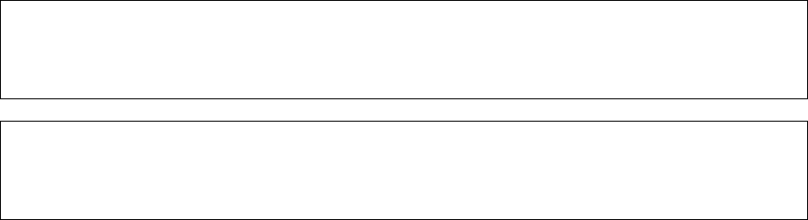

Python 旋风之旅
A Whirlwind Tour of Python
[美] Jake VanderPlas 著 同济大学苹果开发俱乐部 译校
译者序
Python 官方教程的开头是这样写的：“Python 是一门既容易上手又强大的编程语言。”随
着大数据、机器学习与人工智能的兴起，Python 语言正在受到越来越广泛的关注和应用。对爱
好 Python 的人来说，人生苦短，Python 当歌！简洁轻松的语法，开箱即用的模块，强大快乐
的社区，总可以快速构建出简单高效的解决方案。对于希望快速入门 Python 语言的读者们来
说，市面上众多像字典一般厚厚的 Python 书籍常常让人感到头皮发麻。为了让对 Python 语
言感兴趣的读者能快速入门这门语言，而非过分纠结于 Python 细枝末节之处，我们选择并翻
译了这本 Python 教程：A Whirlwind Tour of Python。
本书作者 Jake VanderPlas 目前是华盛顿大学 eScience 学院物理科学研究院院长。他既是
一位天文学家，也是一位会议演讲达人，活跃于历年的 PyData 会议，尤其擅长 Python 科学
计算与数据可视化。Jake 在数据可视化方面颇有建树，创建了 altair、mpld3、JSAnimation 可
视化程序库，同时为 NumPy、Scikit-Learn、Scipy、Matplotlib、IPython 等著名 Python 程序
库做了大量贡献。
这本仅 100 余页的小册子是一本精简的 Python 编程入门教程，介绍了 Python 语言的核
心特性以及数据科学领域内一些 Python 第三方扩展包的实际应用，目的是让熟悉其他编程语
言的数据科学家快速学习 Python。本书适合从未接触过 Python 语言但对其他编程语言有一定
了解的读者，建议读者跟随本书亲自动手完成每一个例子。
本书翻译力求在原版基础上做到精炼、全面、准确地介绍 Python 语言。在书中难于理解
的部分我们添加了译者注，希望能便于读者理解。
本书由同济大学苹果开发俱乐部翻译、审校，其中朱彦樵负责全书统稿工作；朱彦樵负
责翻译第 5、11–13、15–17 章和附录，蒋宇凯负责翻译第 6–9 章，李晗负责翻译第 1–4、10、
14 章；朱彦樵、李晗、李阳、梁琛、阿思亘负责审稿、校对与润色；朱彦樵、李源完成了全书
的编辑排版工作。
本书的出版工作得到了同济大学软件学院出版基金的大力支持，在此一并感谢。
Python 语言以及其他第三方包发展迅速，限于译者的水平与功底，本书错谬之处在所难
免。希望读者能够不吝赐教，帮助本书更加完善。
本书译者
上海嘉定
2018 年 4 月
i
目录
1 Python 介绍 1
1.1 使用示例代码 . . . . . . . . . . . . . . . . . . . . . . . . . . . . . . . . . . . . . . 1
1.2 安装和练习的注意事项 . . . . . . . . . . . . . . . . . . . . . . . . . . . . . . . . . 2
1.2.1 Python 2 还是 Python 3 . . . . . . . . . . . . . . . . . . . . . . . . . . . . 2
1.2.2 使用 Conda 安装 . . . . . . . . . . . . . . . . . . . . . . . . . . . . . . . . 2
1.3 Python 之禅 . . . . . . . . . . . . . . . . . . . . . . . . . . . . . . . . . . . . . . 3
2 如何运行 Python 代码 5
2.1 Python 解释器 . . . . . . . . . . . . . . . . . . . . . . . . . . . . . . . . . . . . . 5
2.2 IPython 解释器 . . . . . . . . . . . . . . . . . . . . . . . . . . . . . . . . . . . . . 5
2.3 自包含 Python 脚本 . . . . . . . . . . . . . . . . . . . . . . . . . . . . . . . . . . 6
2.4 Jupyter Notebook . . . . . . . . . . . . . . . . . . . . . . . . . . . . . . . . . . . 7
3 Python 语法速览 9
3.1 用 # 标记注释 . . . . . . . . . . . . . . . . . . . . . . . . . . . . . . . . . . . . . . 9
3.2 用换行符结束语句 . . . . . . . . . . . . . . . . . . . . . . . . . . . . . . . . . . . 10
3.3 用分号结束语句 . . . . . . . . . . . . . . . . . . . . . . . . . . . . . . . . . . . . . 10
3.4 缩进：空白字符有意义 . . . . . . . . . . . . . . . . . . . . . . . . . . . . . . . . . 11
3.5 行内空白字符无意义 . . . . . . . . . . . . . . . . . . . . . . . . . . . . . . . . . . 12
3.6 小括号用于表达式分组或函数调用 . . . . . . . . . . . . . . . . . . . . . . . . . . 12
3.7 完成并更进一步 . . . . . . . . . . . . . . . . . . . . . . . . . . . . . . . . . . . . . 13
4 基础 Python 语义：变量和对象 15
4.1 变量是指针 . . . . . . . . . . . . . . . . . . . . . . . . . . . . . . . . . . . . . . . 15
4.2 一切皆对象 . . . . . . . . . . . . . . . . . . . . . . . . . . . . . . . . . . . . . . . 17
5 基础 Python 语法：运算符 19
5.1 算术运算符 . . . . . . . . . . . . . . . . . . . . . . . . . . . . . . . . . . . . . . . 19
5.2 位运算符 . . . . . . . . . . . . . . . . . . . . . . . . . . . . . . . . . . . . . . . . 20
5.3 赋值运算符 . . . . . . . . . . . . . . . . . . . . . . . . . . . . . . . . . . . . . . . 21
5.4 比较运算符 . . . . . . . . . . . . . . . . . . . . . . . . . . . . . . . . . . . . . . . 22
5.5 布尔运算符 . . . . . . . . . . . . . . . . . . . . . . . . . . . . . . . . . . . . . . . 23
5.6 身份和成员运算符 . . . . . . . . . . . . . . . . . . . . . . . . . . . . . . . . . . . 23
5.6.1 身份运算符 . . . . . . . . . . . . . . . . . . . . . . . . . . . . . . . . . . . 24
5.6.2 成员运算符 . . . . . . . . . . . . . . . . . . . . . . . . . . . . . . . . . . . 24
i
ii 目录
6 内置类型：简单变量类型 27
6.1 整数 . . . . . . . . . . . . . . . . . . . . . . . . . . . . . . . . . . . . . . . . . . . 27
6.2 浮点数 . . . . . . . . . . . . . . . . . . . . . . . . . . . . . . . . . . . . . . . . . . 28
6.2.1 浮点数精度 . . . . . . . . . . . . . . . . . . . . . . . . . . . . . . . . . . . 29
6.3 复数 . . . . . . . . . . . . . . . . . . . . . . . . . . . . . . . . . . . . . . . . . . . 30
6.4 字符串类型 . . . . . . . . . . . . . . . . . . . . . . . . . . . . . . . . . . . . . . . 30
6.5 None 类型 . . . . . . . . . . . . . . . . . . . . . . . . . . . . . . . . . . . . . . . . 31
6.6 布尔类型 . . . . . . . . . . . . . . . . . . . . . . . . . . . . . . . . . . . . . . . . 32
7 内置数据结构 35
7.1 列表 . . . . . . . . . . . . . . . . . . . . . . . . . . . . . . . . . . . . . . . . . . . 35
7.1.1 列表索引与切片 . . . . . . . . . . . . . . . . . . . . . . . . . . . . . . . . 36
7.2 元组 . . . . . . . . . . . . . . . . . . . . . . . . . . . . . . . . . . . . . . . . . . . 38
7.3 字典 . . . . . . . . . . . . . . . . . . . . . . . . . . . . . . . . . . . . . . . . . . . 40
7.4 集合 . . . . . . . . . . . . . . . . . . . . . . . . . . . . . . . . . . . . . . . . . . . 41
7.5 其他专用数据结构 . . . . . . . . . . . . . . . . . . . . . . . . . . . . . . . . . . . 41
8 控制流 43
8.1 条件语句：if-elif-else . . . . . . . . . . . . . . . . . . . . . . . . . . . . . . . . 43
8.2 for 循环 . . . . . . . . . . . . . . . . . . . . . . . . . . . . . . . . . . . . . . . . . 43
8.3 while 循环 . . . . . . . . . . . . . . . . . . . . . . . . . . . . . . . . . . . . . . . 44
8.4 调整循环执行：break 和 continue . . . . . . . . . . . . . . . . . . . . . . . . . . 45
8.5 带有 else 块的循环 . . . . . . . . . . . . . . . . . . . . . . . . . . . . . . . . . . 45
9 定义和使用函数 47
9.1 使用函数 . . . . . . . . . . . . . . . . . . . . . . . . . . . . . . . . . . . . . . . . 47
9.2 定义函数 . . . . . . . . . . . . . . . . . . . . . . . . . . . . . . . . . . . . . . . . 47
9.3 默认参数 . . . . . . . . . . . . . . . . . . . . . . . . . . . . . . . . . . . . . . . . 48
9.4 可变参数：*args 和 **kwargs . . . . . . . . . . . . . . . . . . . . . . . . . . . . 49
9.5 匿名（Lambda）函数 . . . . . . . . . . . . . . . . . . . . . . . . . . . . . . . . . 50
10 错误和异常 53
10.1 运行时错误 . . . . . . . . . . . . . . . . . . . . . . . . . . . . . . . . . . . . . . . 53
10.2 捕获异常：try 和 except . . . . . . . . . . . . . . . . . . . . . . . . . . . . . . . 55
10.3 抛出异常：raise . . . . . . . . . . . . . . . . . . . . . . . . . . . . . . . . . . . . 57
10.4 深入探究异常 . . . . . . . . . . . . . . . . . . . . . . . . . . . . . . . . . . . . . . 58
10.4.1 访问错误信息 . . . . . . . . . . . . . . . . . . . . . . . . . . . . . . . . . . 58
10.4.2 定义自定义异常 . . . . . . . . . . . . . . . . . . . . . . . . . . . . . . . . 59
10.5 try...except...else...finally . . . . . . . . . . . . . . . . . . . . . . . . . . . . . 60
11 迭代器 61
11.1 遍历列表 . . . . . . . . . . . . . . . . . . . . . . . . . . . . . . . . . . . . . . . . 61
11.2 不总是列表的列表：range() . . . . . . . . . . . . . . . . . . . . . . . . . . . . . 62
11.3 实用迭代器介绍 . . . . . . . . . . . . . . . . . . . . . . . . . . . . . . . . . . . . . 63
目录 iii
11.3.1 enumerate . . . . . . . . . . . . . . . . . . . . . . . . . . . . . . . . . . . 63
11.3.2 zip . . . . . . . . . . . . . . . . . . . . . . . . . . . . . . . . . . . . . . . 64
11.3.3 map 和 filter . . . . . . . . . . . . . . . . . . . . . . . . . . . . . . . . . 64
11.3.4 迭代器作为函数参数 . . . . . . . . . . . . . . . . . . . . . . . . . . . . . . 65
11.4 专用迭代器：itertools . . . . . . . . . . . . . . . . . . . . . . . . . . . . . . . . 66
12 列表推导 67
12.1 基础列表推导 . . . . . . . . . . . . . . . . . . . . . . . . . . . . . . . . . . . . . . 67
12.2 多重迭代 . . . . . . . . . . . . . . . . . . . . . . . . . . . . . . . . . . . . . . . . 68
12.3 条件控制迭代 . . . . . . . . . . . . . . . . . . . . . . . . . . . . . . . . . . . . . . 68
12.4 条件控制值 . . . . . . . . . . . . . . . . . . . . . . . . . . . . . . . . . . . . . . . 68
13 生成器 71
13.1 生成器表达式 . . . . . . . . . . . . . . . . . . . . . . . . . . . . . . . . . . . . . . 71
13.1.1 列表推导使用方括号，而生成器表达式使用圆括号 . . . . . . . . . . . . . 71
13.1.2 列表是值的集合，而生成器是生成值的方法 . . . . . . . . . . . . . . . . . 71
13.1.3 列表可以被迭代多次，而生成器表达式是一次性的 . . . . . . . . . . . . . 73
13.2 生成器函数：使用关键字 yield . . . . . . . . . . . . . . . . . . . . . . . . . . . . 74
13.3 案例学习：素数生成器 . . . . . . . . . . . . . . . . . . . . . . . . . . . . . . . . . 74
14 模块和包 77
14.1 导入模块：import 语句 . . . . . . . . . . . . . . . . . . . . . . . . . . . . . . . . 77
14.1.1 显式模块导入 . . . . . . . . . . . . . . . . . . . . . . . . . . . . . . . . . . 77
14.1.2 显式模块导入并取别名 . . . . . . . . . . . . . . . . . . . . . . . . . . . . . 77
14.1.3 显式导入模块内容 . . . . . . . . . . . . . . . . . . . . . . . . . . . . . . . 78
14.1.4 隐式导入模块内容 . . . . . . . . . . . . . . . . . . . . . . . . . . . . . . . 78
14.2 导入 Python 标准库 . . . . . . . . . . . . . . . . . . . . . . . . . . . . . . . . . . 79
14.3 导入第三方模块 . . . . . . . . . . . . . . . . . . . . . . . . . . . . . . . . . . . . . 79
15 字符串处理和正则表达式 81
15.1 Python 简易字符串操作 . . . . . . . . . . . . . . . . . . . . . . . . . . . . . . . . 81
15.1.1 字符串格式化：大小写转换 . . . . . . . . . . . . . . . . . . . . . . . . . . 81
15.1.2 格式化字符串：添加和删除空格 . . . . . . . . . . . . . . . . . . . . . . . 82
15.1.3 查找和替换子字符串 . . . . . . . . . . . . . . . . . . . . . . . . . . . . . . 84
15.1.4 拆分和分割字符串 . . . . . . . . . . . . . . . . . . . . . . . . . . . . . . . 85
15.2 格式化字符串 . . . . . . . . . . . . . . . . . . . . . . . . . . . . . . . . . . . . . . 86
15.3 使用正则表达式灵活地匹配字符串模式 . . . . . . . . . . . . . . . . . . . . . . . . 88
15.3.1 一个更复杂的例子 . . . . . . . . . . . . . . . . . . . . . . . . . . . . . . . 89
15.3.2 正则表达式语法基础 . . . . . . . . . . . . . . . . . . . . . . . . . . . . . . 90
15.3.3 关于正则表达式的更多资源 . . . . . . . . . . . . . . . . . . . . . . . . . . 94
16 数据科学工具概览 95
16.1 NumPy：Python 数值计算 . . . . . . . . . . . . . . . . . . . . . . . . . . . . . . 95
16.2 Pandas：标签化的面向行数据存储 . . . . . . . . . . . . . . . . . . . . . . . . . . 97
iv 目录
16.3 Matplotlib：MatLab 风格的科学可视化 . . . . . . . . . . . . . . . . . . . . . . . 98
16.4 SciPy：Python 科学计算 . . . . . . . . . . . . . . . . . . . . . . . . . . . . . . . 99
16.5 其他数据科学库 . . . . . . . . . . . . . . . . . . . . . . . . . . . . . . . . . . . . . 100
17 更多学习资源 101
A 附录：插图代码 103
A.1 第 7 章：列表索引 . . . . . . . . . . . . . . . . . . . . . . . . . . . . . . . . . . . 103
中英文术语对照表 105
第 1 章 Python 介绍
在 20 世纪 80 年代后期，Python 作为一种适合教学使用的脚本语言，已经成为学术界和
工业界中许多程序员、工程师、研究人员和数据科学家们必不可少的工具。作为一名专注于构
建和推广适合数据密集型科学研究开放工具的天文学家，我发现无论是从海量天文数据中抽取
出有意义的信息、在网络上爬取数据并进行清洗，还是自动化地处理日常的工作，Python 几乎
都可以完美地解决我每天遇到的各种各样的问题。
Python 的魅力在于它的语法简洁但不失优雅，以及 Python 庞大的生态环境可在不同领域
都发挥作用所带来的便利。比如，大部分在科学计算和数据科学中用到的 Python 代码都使用
到了几种功能强大且成熟的第三方包（package）：
• NumPy：提供对多维数据矩阵进行高效计算和存储的方法。
• SciPy：包含一系列数学工具，比如数值积分和数值插值计算。
• Pandas：提供数据帧对象以及一组强大的方法来处理、过滤、分组和转换数据。
• Matplotlib：提供创建高品质数据图表的接口。
• Scikit-Learn：提供一个用于常用机器学习算法的通用工具包。
• IPython / Jupyter：提供一种交互式笔记本环境，对于科研分析以及创建交互式可执行
文档非常有用。例如，这本书的手稿完全由 Jupyter Notebook 写成。
有了这些强大的包作为支持，其他工具包好像没有什么必要了。如果你需要完成一项科学
分析或者数据分析的任务，一般来说都有人已经写了这样一个工具。
为了能更好的感受到 Python 在数据科学领域的力量，首先要熟悉 Python 的语法。我常常
遇到一些有着（有时是广泛的）其他编程语言背景（比如 MATLAB、IDL、R、Java 和 C++ 等）
的学生和同事一直在寻找一份简洁、全面，并且符合他们的水平而不是从零开始的 Python 教
程，这份教程就试图填补这个空白。
因此，本书不是为了全面地介绍编程，也不是一份完整的 Python 语言说明。（如果你对此
有需求，可以看看第 17 章更多学习资源。）相对地，这本书为你提供了一场 Python 的旋风之
旅，它涉及到 Python 核心的语法、语义、内置的数据类型和数据结构、函数定义、控制流语
句和这门语言的其他方面。我希望读者能顺着这本书走下去，为探索数据科学打下坚实的基础。
1.1 使用示例代码
本书中使用到的一些补充资料（示例代码或者练习等）可以从这里下载：https://github.
com/jakevdp/WhirlwindTourOfPython/。本书是要帮你完成工作的。一般来说，如果本书提
供了示例代码，你可以把它用在你的程序或文档中。除非你使用了很大一部分代码，否则无
须联系我们获得许可。比如，用本书的几个代码片段写一个程序就无须获得许可，销售或分
1

2 1. PYTHON 介绍
发 O’Reilly 图书的示例光盘则需要获得许可；引用本书中的示例代码回答问题无须获得许可，
将书中大量的代码放到你的产品文档中则需要获得许可。
我们很希望但并不强制要求你在引用本书内容时加上引用说明。引用说明一般包括书名、
作者、出版社和 ISBN，比如：A Whirlwind Tour of Python by Jake VanderPlas (O’Reilly).
Copyright 2016 O’Reilly Media, Inc., 978-1-491-96465-1。
如 果 你 觉 得 你 使 用 代 码 示 例 的 场 景 不 符 合 上 述 规 定， 请 随 时 通 过 permis-
sions@oreilly.com 与我们联系。
1.2 安装和练习的注意事项
无论是使用 Windows、Linux 还是 macOS，安装 Python 和使用科学计算的库套件都非常
简单。本节将简要介绍配置你的环境时的一些注意事项。
1.2.1 Python 2 还是 Python 3
这本书使用了 Python 3 的语法，其中包含与 Python 2.x 系列不兼容的语言增强功能。虽
然 Python 3.0 在 2008 年首次发布，但采用的速度相对较慢，特别是在科学研究和 Web 开
发领域。这主要是因为许多基本软件包和工具包需要一些时间才能与新的语言兼容。然而，
自 2014 年初以来，数据科学生态中一些最重要的工具的稳定版本已经与 Python 2 和 3 完全兼
容，因此本书将使用较新的 Python 3 语法。即使是在这种情况下，本书中绝大多数的代码片
段也可以在 Python 2 中不加修改地运行。在使用 Python 2 不兼容的语法的情况下
1
，我将尽
力明确地注明。
1.2.2 使用 Conda 安装
虽然有很多种方法安装 Python，但是我较为推荐跨平台的 Anaconda，特别是如果你希望
最终使用前面提到的数据科学工具的话。Anaconda 的发行版有下面两种版本：
• Miniconda 提供了一个 Python 解释器和一个叫做 conda 的命令行工具，它提供了面
向 Python 包的跨平台包管理功能，就像 Linux 用户熟悉的 apt 或者 yum。
• Anaconda 包括 Python 和 conda，以及可添加的科学计算套件。
Anaconda 所包含的包都可以手动地安装在 Miniconda 中。出于这个原因，我推荐从 Mini-
conda 开始。要下载并安装 Miniconda，确保你已经选择了 Python 3 版本，然后安装 IPython
Notebook 包：
[~]$ conda install ipython-notebook
想获得关于 conda 的信息，例如如何创建或者使用 conda 环境，请查看上面给出的 Mini-
conda 链接。
1
译者注：Python 核心团队计划在 2020 年停止支持 Python 2。已经有许多开源项目，如 Numpy、sklearn 等
也已经发表声明将在 2020 年以前放弃对于 Python 2 的支持。

1.3. PYTHON 之禅 3
1.3 Python 之禅
Python 爱好者经常很快指出 Python 是多么“直观”“美丽”或“有趣”。虽然我倾向于同意
这个观点，但我也认识到，美丽、直观和乐趣往往与对语言的熟悉并存，因此对于那些熟悉其他
语言的人来说，这种绚丽的情感可能会显得有些沾沾自喜。不过，我希望如果你给 Python 一个
机会，你将会看到这样的印象可能来自哪里。并且，如果你真的想深入探究那些推动 Python 高
级用户编程实践的编程理念的话，Python 解释器中就有一个很好的复活节小彩蛋——你只需
闭上眼睛，冥想几分钟，然后运行 import this：
In [1]: import this
The Zen of Python, by Tim Peters
Beautiful is better than ugly.
Explicit is better than implicit.
Simple is better than complex.
Complex is better than complicated.
Flat is better than nested.
Sparse is better than dense.
Readability counts.
Special cases aren't special enough to break the rules.
Although practicality beats purity.
Errors should never pass silently.
Unless explicitly silenced.
In the face of ambiguity, refuse the temptation to guess.
There should be one-- and preferably only one --obvious way to do it.
Although that way may not be obvious at first unless you're Dutch.
Now is better than never.
Although never is often better than *right* now.
If the implementation is hard to explain, it's a bad idea.
If the implementation is easy to explain, it may be a good idea.
Namespaces are one honking great idea -- let's do more of those!
伴随着《Python 之禅》
2
，让我们开始我们的 Python 之旅！
2
译者注：《Python 之禅》是 Python 2.2 及以后版本中的一个小彩蛋，是 Tim Peters 在 1999 年 6 月左右
所写的 20 个影响 Python 编程语言设计的原理组成的集合，其中 19 个被包括在这里。《Python 之禅》实际上
是 Python 增强提案（Python Enhancement Proposals, PEP）中的第 20 号提案 PEP 20。有意思的是，如果你查
看 this 模块的源代码，你会发现它完全违背了这些原则 。

第 2 章 如何运行 Python 代码
Python 是一种灵活的语言，你可以根据你手中的任务选择不同的方法来使用它。Python 和
其他编程语言的一个区别在于 Python 是解释型（interpreted）而不是编译型（compiled）语言。
这意味着 Python 是一行一行执行的，因此它具有 Fortran、C 或者 Java
1
这些编译型语言无法做
到的“交互”特性。这一节会介绍
4
种运行
Python
代码的主要方法：使用
Python
或
IPython
解
释器（interpreter）、运行自包含脚本（self-contained script）或者使用 Jupyter Notebook。
2.1 Python 解释器
逐行运行 Python 代码最基础的方法是在 Python 解释器中运行。安装 Python 语言运行
时（在前面的一节提到过）然后在命令行中输入 python（在 macOS 和 Unix/Linux 中使用终
端（terminal），或者在 Windows 下使用 CMD）：
$ python
Python 3.5.1 |Continuum Analytics, Inc.| (default, Dec 7 2015, 11:24:55)
Type "help", "copyright", "credits" or "license" for more information.
>>>
当解释器启动之后，你就可以开始输入并执行代码片段了。这里我们可以把它当作一个简
单的计算器来用，执行一个计算过程并把结果赋给某个变量（variable）：
>>> 1 + 1
2
>>> x = 5
>>> x * 3
15
这个解释器让我们能方便地尝试一些 Python 代码片段并尝试一些短的操作序列。
2.2 IPython 解释器
如果你在原始的 Python 解释器上花费了很多时间，你会发现它缺少作为一个成熟的交互
开发环境的许多功能。另一种可选的解释器叫做 IPython（Interactive Python 的缩写），它包
含在 Anaconda 发行版中，而且它包含许多相对于基础 Python 解释器更方便的增强功能。在
命令行中输入 ipython 可以开启它：
1
译者注：在最近推出的 Java 9 及以后的版本中，Java 提供了 JShell 使得 Java 具有了交互的功能。
5

6 2. 如何运行 PYTHON 代码
$ ipython
Python 3.5.1 |Continuum Analytics, Inc.| (default, Dec 7 2015, 11:24:55)
Type "copyright", "credits" or "license" for more information.
IPython 4.0.0 -- An enhanced Interactive Python.
? -> Introduction and overview of IPython's features.
%quickref -> Quick reference.
help -> Python's own help system.
object? -> Details about 'object', use 'object??' for extra details.
In [1]:
原始 Python 解释器和 IPython 解释器美学上的区别主要取决于命令行中的提示符：
Python 默认使用 >>> 作为提示符，而 IPython 为每行命令进行了数字编号（比如 In [1]:）。
不管怎样，我们还是可以像前面那样逐行地执行代码。
In [1]: 1 + 1
Out[1]: 2
In [2]: x = 5
In [3]: x * 3
Out[3]: 15
请注意，就像输入的命令被编号一样，每个命令的输出也被编号。IPython 实现了很广泛
的有用的功能，更多的资料可以参见第 17 章更多学习资源。
2.3 自包含 Python 脚本
在某些情况下，能够一行一行地运行 Python 代码块确实很有用，但是对于更多复杂的程
序，把代码保存到文件中并一次性执行是更明智的选择。按照惯例，Python 脚本会被保存在扩
展名为 .py 的文件中。比如，让我们创建一个名叫 test.py 的文件，并把下面的内容写入进去。
# 文件：test.py
print("Running test.py")
x = 5
print("Result is", 3 * x)
为了运行这个文件，我们必须确保它在一个正确的目录下，然后在命令行中输入： python
filename 。
$ python test.py
Running test.py
Result is 15

2.4. JUPYTER NOTEBOOK 7
对于更复杂的程序，创建像这样的自包含脚本
2
是必须的。
2.4 Jupyter Notebook
Jupyter Notebook 是一种很好用的工具，它融合了交互式命令行和自包含脚本的特点。它
是一种文档格式，其中可以包含可执行代码、格式化的文本、图片等，甚至可以用交互功能组
成整个文档。虽然这种特殊的记事本开始时只有 Python 版本，但是它正在不断地被其他许多
语言兼容。到了现在，它已经是 Jupyter Pro ject 的一部分。这种记事本不止是一种好用的开发
环境，也是将代码、数字、数据和文本相结合，通过丰富的计算和数据驱动的叙述来共享工作
的一种手段。
2
译者注：严格来说，自包含脚本意味着一个脚本不需要额外环境就可以运行。对于 Python 这类解释型语言，虽
然无法编译 Python 脚本，但是可以使用第三方库如 cxfreeze 和 PyInstaller 等进行打包。这里“自包含”的意义
主要在于一个脚本文件包含了全部需要执行的代码。

第 3 章 Python 语法速览
最开始 Python 是被当作一门用来教学的语言来开发的，但是它的易用性和简洁的语法让
它受到初学者和专家们的欢迎。
Python 语法的简洁性使得一些人将其称为“可执行伪代码”。并且，实际上我自己的经验
是，阅读和理解
Python
脚本比阅读类似的代码（例如
C
语言）要容易得多。这里我们将开始
讨论 Python 语法（syntax）的主要特性。
语法指的是语言的结构（即构成正确构造的程序的内容）。在开始的时候，我们不会过分地
纠结语义（semantics）——这个词指的是语法中词和符号的含义——但是我们在后面的学习中
终究绕不开它。
来看一下后面这个例子：
In [1]: # 设置中点
midpoint = 5
# 创建两个空的列表
lower = []; upper = []
# 把数字分为大的一半和小的一半
for i in range(10):
if (i < midpoint):
lower.append(i)
else:
upper.append(i)
print("lower:", lower)
print("upper:", upper)
lower: [0, 1, 2, 3, 4]
upper: [5, 6, 7, 8, 9]
这段代码看起来有点傻，但是在短短几句中就展示了 Python 语法中的几个重要部分。现
在让我们一点点来看，探讨一下 Python 的语法特性。
3.1 用 # 标记注释
这段脚本是由一句注释开始的：
9

10 3. PYTHON 语法速览
# 设置中点
在 Python 中，注释是用一个 # 字符来表示的，一行中跟在 # 字符后面的东西都会被解释
器忽略掉。这意味着，比如你可以像刚才那样将注释独立成行，也可以将注释写在语句后的同
一行内。例如，你可以像下面这样写一个注释：
x += 2 # x = x + 2 的简写形式
虽然多行字符串经常被用来替代多行注释，但是 Python 中并没有类似 C 和 C++ 中使用
的
/* ... */
的多行注释的语法。关于这个问题可以参阅第 15 章字符串处理和正则表达式。
3.2 用换行符结束语句
脚本的下一行是：
midpoint = 5
这是一个赋值运算符（assignment operator）。我们创建了一个叫做 midpoint 的变量，并
且把它的值赋为 5。注意到，在句子末尾我们简单地使用了换行来标识一行的结束。这和必须
使用分号（;）结束一个句子的的 C 和 C++ 等语言正好相反。
在 Python 中，如果你想要在下一行继续一个语句，你可以使用 \ 字符来来指示这一点：
In [2]: x = 1 + 2 + 3 + 4 +\
5 + 6 + 7 + 8
用一对小括号把一个语句括起来也可以让一个表达式换行：
In [3]: x = (1 + 2 + 3 + 4 +
5 + 6 + 7 + 8)
大部分 Python 代码风格指南都建议第二种方法（使用括号），而不是第一种（使用 \ 字
符）。
3.3 用分号结束语句
有时候把多个语句放在一行上可能会很有用。脚本中下一行代码是：
lower = []; upper = []
这里展示了如何像 C 语言中那样在 Python 中使用分号（;）把两个语句放到同一行里。从
功能上来说，下面这种写法和上面是等价的：
lower = []
upper = []
尽管偶尔使用这种方法能带来一定的便利，使用分号来把两个语句放到同一行中并不被大
部分的 Python 代码风格指南所推荐。

3.4. 缩进：空白字符有意义 11
3.4 缩进：空白字符有意义
接下来让我们来看看代码里主要的部分：
for i in range(10):
if i < midpoint:
lower.append(i)
else:
upper.append(i)
这是一个复合控制流语句（control flow statement），它包含了一个循环语句（loop state-
ment）和一个条件语句（conditional statement）——我们等一下再来讨论这两种语句。现在，
先来看看下面展示出的可能是 Python 语法中最有争议的一个特性：空白字符是有意义的！
在编程语言中，一个代码块（block）指的是可以看作一个单元的几个语句的集合。比如，
在 C 语言中代码块被大括号包裹起来：
// C 代码
for (int i = 0; i < 100; i++)
{
// 大括号标识代码块
total += i;
}
在 Python 中，代码块使用缩进（indentation）来标识：
for i in range(100):
# 缩进标识代码块
total += i
在 Python 中，缩进的代码块的前一行末尾经常有一个冒号（:）。
使用缩进可以强制规范出一种在大多数 Python 代码中统一的、可读性高的代码风格。但
是也可能让初学者觉得很困惑，后面两个代码片段会产生不同的结果：
>>> if x < 4: >>> if x < 4:
... y = x * 2 ... y = x * 2
... print(x) ... print(x)
左边的代码片段中，print(x) 在缩进块里面，所以只有 x 小于 4 的时候才会被执行。右
边的代码片段中，print(x) 在缩进块外面，所以不管 x 的值为多少都会被执行！
一些习惯其他编程语言的程序员对 Python 中有意义的空白字符很惊讶，但是从实践中
来看，这样可以比那些不强制缩进的语言有更好的可读性和风格的一致性。如果你觉得使
用 Python 的空白字符很不舒服，我建议你去尝试一下，你会发现你将逐渐适应它。
最后，你应该注意到，用于缩进代码块的空格的数量取决于用户，只要它在整个脚本中是
一致的就好。按照惯例，大多数风格指南都建议将代码块缩进四个空格，这也是本书中遵循的
约定。请注意，许多文本编辑器（如 Emacs 和 Vim）都包含 Python 模式，能自动缩进四个空
格。

12 3. PYTHON 语法速览
3.5 行内空白字符无意义
虽然在行（代码块）之前的空格是有意义的，但 Python 行内的空格并不重要。例如，这
三个表达式是等价的：
In [4]: x=1+2
x = 1 + 2
x = 1 + 2
滥用这种灵活性可能会导致代码可读性的问题——实际上滥用空白字符通常是故意混淆的
代码的主要手段之一（有些人常常以此为消遣）。有效地使用空白可以让代码可读性更好，特别
是在操作符相连的情况下。比较以下两个求幂的表达式：
x=10**-2
x = 10 ** -2
我觉得一眼看过去第二个版本更容易读懂。大多是的风格指南都推荐在二元运算符前后各
加一个空格，在一元运算符前后不加空格。我们会在第 5 章基础 Python 语法：运算符中进一
步讨论 Python 的运算符。
3.6 小括号用于表达式分组或函数调用
在前面的代码片段中，我们看到两种使用小括号的方式。首先，小括号可以用在为表达式
或者数学运算的分组中：
In [5]: 2 * (3 + 4)
Out[5]: 14
小括号还可以用于函数（function）被调用的时候。在下面的代码片段中，print() 函数用
于显示一个变量的内容。下面这个例子中一对小括号将函数的参数（argument）括起来，这表
示将这些参数传入这个函数来调用它。
In [6]: print('first value:', 1)
first value: 1
In [7]: print('second value:', 2)
second value: 2
有的函数可以没有参数，这时候也必须使用小括号来表示调用这个函数。下面是一个使
用列表的 sort 方法的例子：

3.7. 完成并更进一步 13
In [8]: L = [4,2,3,1]
L.sort()
print(L)
[1, 2, 3, 4]
sort 之后的括号（()）表示函数被执行。即使不需要传入参数，括号也是必不可少的。
旁注：关于 print() 的一点说明
在上面我们是用了 print() 函数做例子，print() 函数是 Python 2.x 和 Python 3.x 中
变化的一部分。在 Python 2 里，print 表现得像一个表达式——你可以这样写：
# Python 2 才能这么做！
>> print "first value:", 1
first value: 1
由于各种原因，这门语言的开发者决定在 Python 3 中 print() 应该成为一个函数，所
以我们现在这么写：
# 仅 Python 3 支持！
>>> print("first value:", 1)
first value: 1
这是 Python 2 和 3 中不向后兼容的语法中的一条。在撰写本书时，你通常会发现以两
个版本的 Python 编写的示例。并且，存在 print 语句，而不是 print() 函数通常是你正
在查看的代码是 Python 2 代码的第一迹象之一。
3.7 完成并更进一步
这一章是 对 Python 语 法基 本特 征的 一个 很简 单的 探索。 它的 目的 是当 你在阅读后
面的代码时，给你一个很好的参考框架。我们几次提到了“Python 风格指南”，它可以
帮助 团 队以一 致 的风格 编 写代码。Python 中 最广泛 使 用的风 格 指南 称 为 PEP 8，可 以
在 https://www.python.org/dev/peps/pep-0008/ 找到。当你开始编写更多的 Python 代码
时，阅读一下这份代码指南是很有用的！风格指南中包含许多 Python 大师的智慧，大多数建
议不仅仅是简单的教条：它们是基于无数经验的建议所写成，可以帮助你们避免代码中一些微
妙的错误和 bug。

第 4 章 基础 Python 语义：变量和对象
本节将开始介绍 Python 语言的基本语义（semantics）。与上一节所述的语法不同，语言
的语义涉及语句的含义。正如我们对语法的讨论一样，在这里我们大致浏览 Python 中一些基
本的语义结构，为你提供一个更好的参考框架，以了解以后章节的代码。
本节将介绍变量（variable）和对象（object）的语义，这是你在 Python 脚本中存储、引
用和操作数据的主要方式。
4.1 变量是指针
在 Python 中想要为变量赋值易如反掌，只需要把一个变量名放到等号（=）的左边就好。
# 把 4 赋给变量 x
x = 4
这可能看起来很直接，但如果你心中对这个操作建立了错误的印象，那么 Python 的工作
方式可能会令你感到困惑。我们将在这里简要介绍一下。
在许多编程语言中，变量一般被认为是存放数据的容器或一个桶一样的东西。所以比如
在 C 中，当你写：
// C 代码
int x = 4;
本质上，你定义了一个名为 x 的“内存桶”，并将值 4 放入其中。相比之下，在 Python 中变
量并不是作为容器，而是作为一个指针（pointer）
1
。所以在 Python 中，当你写：
x = 4
你本质上定义一个名为 x 的指针，指向一些包含值 4 的内存中的位置。注意这么做的一个
后果：因为
Python
的变量只是指向各种对象，所以不需要“声明”变量，甚至不需要要求变
量总是指向相同类型的对象！这是人们所说的 Python 的动态类型（dynamically typed）：变量
名称可以指向任何类型的对象。所以在 Python 中，你可以这样做：
In [1]: x = 1 # x 是一个整数类型
x = 'hello' # 现在 x 是一个字符串
x = [1, 2, 3] # 现在 x 是一个列表
1
译者注：Python 中并没有 C 语言那样的指针类型，它表现得更像 C++ 或者 Java 中引用（reference）的概
念，后文中的指针一般是使用这里的含义。
15

16 4. 基础 PYTHON 语义：变量和对象
然而静态类型（statically typed）语言的用户可能会想念类似于 C 语言中的通过声明保证
的类型安全性。
int x = 4;
这种动态类型是使 Python 能够快速编写并易于阅读的原因之一。你需要注意使用这种
“指针类型变量”的后果：如果我们有两个变量名指向相同的可变（mutable）对象，那么更改
其中一个也会改变另一个！例如，我们来创建和修改列表：
In [2]: x = [1, 2, 3]
y = x
我们创建的两个变量 x 和 y 指向了同一个对象。因此，如果我们通过其中一个变量名来修
改这个列表，我们会看到“另一个”列表也被同时改变了。
In [3]: print(y)
[1, 2, 3]
In [4]: x.append(4) # 把 4 加到 x 指向的列表
print(y) # y 指向的列表也被改变了
[1, 2, 3, 4]
如果你错误地将变量视为包含数据的“桶”，那么这种行为可能会令人困惑。但是，如果你
将变量正确地视为指向对象的指针，那么这种行为是有道理的。
如果我们用 = 把另外一个值赋给 x，就不会影响到 y 的值——赋值是改变变量指向的对象：
In [5]: x = 'something else'
print(y) # y 没有被改变
[1, 2, 3, 4]
再次强调，把 x 和 y 看作指针，把 = 看做改变变量名指向的东西的操作。
你可能会想知道这个指针的想法是否使得 Python 中的算术运算难以追踪，但是 Python 的
设计不存在这个问题。数字、字符串和其他简单类型（simple type）是不可变（immutable）的：
你不能更改它的值，你只能更改变量指向的值。所以执行如下操作是完全安全的：
In [6]: x = 10
y = x
x += 5 # 把 x 的值加上 5 再赋给 x
print("x =", x)
print("y =", y)

4.2. 一切皆对象 17
x = 15
y = 10
当我们执行 x += 5 时, 我们不会改变值为 10 的那个被 x 指向的对象；我们会让 x 重新指
向一个值为 15 的新的对象。因此， y 的值不会受到这个操作的影响。
4.2 一切皆对象
Python 是一门面向对象（object-oriented）的编程语言，所以 Python 中的一切都是对象。
我们来看看这是什么意思。之前我们看到变量是简单的指针，变量名本身没有附加的类型
信息。这导致一些人错误地声称 Python 是一种无类型的语言。但事实并非如此！考虑以下这
个例子：
In [7]: x = 4
type(x)
Out[7]: int
In [8]: x = 'hello'
type(x)
Out[8]: str
In [9]: x = 3.14159
type(x)
Out[9]: float
Python 有类型，然而这些类型不是链接到变量名，而是与对象本身相连。
在面向对象的编程语言（如 Python）中，对象（object）是一个包含数据以及关联的元数
据（metadata）和功能的实体。在 Python 中一切都是对象，这意味着每个实体都有一些元数
据（称为属性（attribute））和关联的功能（称为方法（method））。这些属性和方法通过点号
（.）访问。
例如，在我们看到列表有一个 append 方法之前，它将一个元素添加到列表中，并通过点
号访问：
In [10]: L = [1, 2, 3]
L.append(100)
print(L)
[1, 2, 3, 100]
可能你一般会认为复合对象（如列表）具有属性和方法，但令人意外的是在 Python 中，即
使是简单类型也附加了属性和方法。
18 4. 基础 PYTHON 语义：变量和对象
比如，数值类型拥有 real 和 imag 属性，保存了这个值的实部和虚部（如果把它看成一
个复数）。
In [11]: x = 4.5
print(x.real, "+", x.imag, 'i')
4.5 + 0.0 i
方法和属性类似，不过方法是使用一对小括号来调用的函数。例如，浮点数有一个叫
做 is_integer 的方法来检查这个值是否是一个整数：
In [12]: x = 4.5
x.is_integer()
Out[12]: False
In [13]: x = 4.0
x.is_integer()
Out[13]: True
当我们说 Python 中的所有东西都是一个对象时，我们的意思是一切都是一个对象——即
使是对象的属性和方法本身就是自己的一个有 type 信息的对象。
In [14]: type(x.is_integer)
Out[14]: builtin_function_or_method
我们会发现 Python 的一切皆对象的设计带来了一些非常方便的语言结构。

第 5 章 基础 Python 语法：运算符
在之前的章节中我们大致了解了 Python 语法中关于变量和对象的知识。本章起我们将继
续深入了解 Python 语法中不同的运算符（operator）。本章结束之时，你将掌握一些基本的工
具来比较和操作 Python 中的数据。
5.1 算术运算符
Python 实现了 7 种基础二元算术运算符（binary arithmetic operator），其中的 2 种可以
同时被用作一元运算符（unary operator）。下表总结了这 7 种运算符：
运算符 名称 描述
a + b 加 a 与 b 求和
a - b 减 a 与 b 求差
a * b 乘 a 与 b 求积
a / b 真除 a 与 b 求商
a // b 向下整除 a 与 b 求商，去掉小数部分
a % b 模 a 与 b 取模
a ** b 乘方 a 的 b 次方
-a 取反 a 符号取反
+a 单目加 a 不变（极少使用）
这些运算符可以直接按照直觉使用并组合，并且按照标准规范添加括号来规定计算的优先
级。如：
In [1]: # 加、减、乘
(4 + 8) * (6.5 - 3)
Out[1]: 42.0
向下整除（floor division）的结果是真除（true division）后去掉小数部分：
In [2]: # 真除
print(11 / 2)
5.5
19

20 5. 基础 PYTHON 语法：运算符
In [3]: # 向下整除
print(11 // 2)
5
向下整除是在 Python 3 中添加的新运算符。你应当意识到在 Python 2 中标准除法运算符
（/）对于整数来说执行的是向下整除，而对浮点数来说执行的是真除。
最后，我将提到 Python 3.5 中添加的第 8 个算术运算符：a @ b。这个运算符对 a 和 b 执
行矩阵乘法（matrix product），用于许多线性代数（linear algebra）的扩展库。
5.2 位运算符
除了 基 本的算 术 运算 符 外，Python 还提 供了对整 数进行位 运算的位 运 算符 （bitwise
operator）。相比基本运算符，这些运算符更少被使用，但是知道它们的存在是有用的。下表总
结了 6 个位运算符：
运算符 名称 描述
a & b 按位与 a 与 b 全为 1 时为 1，否则为 0
a | b 按位或 a 与 b 全为 0 时为 0，否则为 1
a ˆ b 按位异或 a 与 b 位相等时为 0，否则为 1
a << b 按位左移 a 左移 b 个单位
a >> b 按位右移 a 右移 b 个单位
~a 按位取反 对 a 按位取反
这些位运算符在仅仅对数字使用二进制表示（binary representation）时才有意义。你可以
使用内置的 bin 函数查看一个数的二进制表示。
In [4]: bin(10)
Out[4]: '0b1010'
上述结果均有一个 0b 前缀，表示这是一个二进制表示。剩余的数字表明数字 10 用 1 · 2
3
+
0 · 2
2
+ 1 · 2
1
+ 0 · 2
0
的和表示出来了。类似地，我们可以输入：
In [5]: bin(4)
Out[5]: '0b100'
现在，使用按位或运算，我们可以将 4 和 10 的位合并起来：
In [6]: 4 | 10
Out[6]: 14

5.3. 赋值运算符 21
In [7]: bin(4 | 10)
Out[7]: '0b1110'
这些位运算符并不像基本算术运算符那样直接有用，但是至少我们需要知道它们执行什么
类型的操作。特别地，其他语言的用户有时会在需要表示乘方运算（即 a ** b）的时候误用
成异或运算符（即 a ˆ b）。
5.3 赋值运算符
我们已经知道了变量可以使用赋值运算符（=）进行赋值，这时变量的值被存储下来以便于
之后的使用。例如：
In [8]: a = 24
print(a)
24
我们可以在前面提到的任何运算符的表达式中使用这些变量。例如，如下的语句可以
给 a 加上 2：
In [9]: a + 2
Out[9]: 26
我们可能需要将变量 a 更新为这个新的值；在此情况下，我们可以将赋值运算符和加
法运算符合并起来：a = a + 2。因为这种将赋值运算符和算术运算符结合的操作非常普遍，
Python 对所有算术运算符都内置了如下的更新运算符：
In [10]: a += 2 # 与 a = a + 2 等价
print(a)
26
对应于之前列出的所有二元运算符，Python 提供了扩展的赋值运算符。下表总结了它们：
a += b a -= b
a //= b a %= b
a |= b a ˆ= b
表中每一个运算符都与进行完对应的算术运算后跟一个赋值运算等价。具体来说：对于任
意运算符 •，表达式 a •= b 与 a = a • b 等价。对于可变对象，比如列表、数组或者数据帧，

22 5. 基础 PYTHON 语法：运算符
上述扩展的赋值运算符实际上与它们更复杂的对应操作略有不同：它们直接修改原有对象的内
容，而不是创建一个新的对象存储运算结果。
5.4 比较运算符
另一种非常有用的运算符是对不同的值进行比较。对此，Python 实现了标准的比较运算符
（comparison operator），返回布尔值 True 和 False。下表列出了所有的比较运算符：
运算符 名称 描述
a == b 等于 a 与 b 相等
a != b 不等于 a 不等于 b
a < b 小于 a 小于 b
a > b 大于 a 大于 b
a <= b 小于等于 a 小于或等于 b
a >= b 大于等于 a 大于或等于 b
这些比较运算符可以与算术运算符和位运算符任意组合来表达对数字几乎各种的测试逻
辑。例如，我们可以通过检查与 2 的模是否返回 1 来测试一个数字是否为奇数：
In [11]: # 25 是奇数吗？
25 % 2 == 1
Out[11]: True
In [12]: # 66 是奇数吗？
66 % 2 == 1
Out[12]: False
我们可以串联多个比较运算符来检查更复杂的关系：
In [13]: # 检查是否 a 属于区间 (15, 30)
a = 25
15 < a < 30
Out[13]: True
之后，来动动脑子想一下，看看下面这个比较关系：
In [14]: -1 == ~0
Out[14]: True

5.5. 布尔运算符 23
回忆一下，~ 是按位取反运算符。显然，当你按位取反 0 ，你最后将得到 −1。如果你对为
什么会得到这样的结果而感到好奇，你可以查看补码（two’s complement）整数编码方案。这
是 Python 用来编码有符号整数的方案。思考一下，当你翻转以这种方式编码的整数的所有位
时会发生什么？
5.5 布尔运算符
当使用布尔值时，Python 提供了布尔运算符（boolean operator）使用“和”“或”和“非”
的标准概念组合不同的布尔值。不出意外地，这些运算符直接使用单词 and、or 和 not 来表达：
In [15]: x = 4
(x < 6) and (x > 2)
Out[15]: True
In [16]: (x > 10) or (x % 2 == 0)
Out[16]: True
In [17]: not (x < 6)
Out[17]: False
布尔代数（boolean algebra）的狂热爱好者可能不会注意到异或（exclusive or）运算
符 XOR 并没有包括在内。达到异或的效果可以通过组合多种其他运算符的方式实现。你可以
使用下面这种聪明的小窍门实现布尔值的异或运算：
In [18]: # (x > 1) xor (x < 10)
(x > 1) != (x < 10)
Out[18]: False
当我们开始讨论控制流语句（比如循环语句和条件语句）时，这些布尔运算符将会非常有
用。
一个较容易混淆的点在于什么时候使用布尔运算符（and、or 和 not），什么时候使用位运
算符（&、| 和 ~）。答案取决于它们的名字：布尔运算符应当在你需要对整个语句的布尔值（即
正确或者错误）进行计算时用到；而位运算符则应当在你需要对单独的位或者不清楚对象的某
个部分进行操作时用到。
5.6 身份和成员运算符
就像 and、or 和 not 一样，Python 同样提供了像英语散文一样直接的运算符来检查两
个对象是否相同以及一个对象是否包含在另一个对象中。下表总结了这些运算符：
24 5. 基础 PYTHON 语法：运算符
运算符 描述
a is b 当 a 和 b 为相同对象时为真
a is not b 当 a 和 b 为相同对象时为假
a in b 当 a 是 b 的一个成员时为真
a not in b 当 a 是 b 的一个成员时为假
5.6.1 身份运算符
身份运算符（identity operator） is 和 is not 检查对象身份（object identity）是否相同。
对象身份相同与对象相等（object equality）不同，我们可以在下列例子中看到：
In [19]: a = [1, 2, 3]
b = [1, 2, 3]
In [20]: a == b
Out[20]: True
In [21]: a is b
Out[21]: False
In [22]: a is not b
Out[22]: True
什么样才算是对象身份相同呢？下列例子说明了这个问题：
In [23]: a = [1, 2, 3]
b = a
a is b
Out[23]: True
上述两个例子的区别在于：第一个例子中 a 和 b 指向了不同的对象，而第二个例子中它们
指向了相同的对象。如我们在上一节中看到的，Python 变量实际上是指针。is 运算符检查的
是两个变量是否指向同一个容器（对象），而不是检查它们指向的容器中内容是否一致。有了这
个概念，你就会发现很多情况下初学者想要使用 is，实际上他们大多真正意味着 ==。
5.6.2 成员运算符
成员运算符（membership operator）在复合对象（compound object）中检查成员存在情
况。比如，我们可以写：

5.6. 身份和成员运算符 25
In [24]: 1 in [1, 2, 3]
Out[24]: True
In [25]: 2 not in [1, 2, 3]
Out[25]: False
这些成员操作是让 Python 相比低级语言（如 C 语言）更容易使用的一个例子。在 C 语
言中，成员的检查需要在列表中手动构造一个循环后检查每个元素是否相等来实现。而
在 Python 中，你只需要像写英语句子一样直接地键入你想要知道的就可以实现。

第 6 章 内置类型：简单变量类型
谈到 Python 的变量和对象，我们会发现所有的 Python 对象都附带有相应的类型信息。这
里我们将简要地介绍一遍 Python 内置的简单变量类型。我们所说的“简单类型（simple type）”
是与一些复合类型（compound type）相区别的，在后面的章节中我们会继续讨论复合类型。
下表总结了
Python
的简单变量类型：
类型 举例 描述
int x = 1 整数（对应包括负数和零的整数域）
float x = 1.0 浮点数（对应实数域）
complex x = 1 + 2j 复数（包括实部与虚部的复数）
bool x = True 布尔值：表示真和假
str x = 'abc' 字符串：表示字符或者文本
NoneType x = None 特殊的用以表示空的对象
我们会快速地将这些类型依次介绍一遍。
6.1 整数
最基本的用来表示数字的类型是整数（integer）。所有不含小数点的数字都是整数：
In [1]: x = 1
type(x)
Out[1]: int
Python 的整数实际上比 C 语言中的整数更为复杂。C 的整数是固定精度（fixed-precision）
的，而且通常会发生溢出现象（通常发生在整数值靠近 2
31
或者 2
63
时，具体取决于你的系统）。
Python 的整数则是可变精度（variable-precision）的，因而你可以完成一些在其他语言中往往
会溢出的计算：
In [2]: 2 ** 200
Out[2]: 1606938044258990275541962092341162602522202993782792835301376
Python 整数另外一个方便的特性是它的除法结果可以被默认地转换成浮点类型：
27

28 6. 内置类型：简单变量类型
In [3]: 5 / 2
Out[3]: 2.5
需要注意的是这一向上转换是 Python 3 的一个特性；而在 Python 2 中，整数除法截断了
小数部分并返回一个整数的结果，就像许多类似于 C 语言的静态类型语言一样：
# Python 2 的特性
>>> 5 / 2
2
如果想要在
Python 3
中复原这种行为的整除，你可以采用向下整除运算符：
In [4]: 5 // 2
Out[4]: 2
最后，需要注意的是 Python 2.x 同时拥有 int 和 long 两种类型，而 Python 3 则将这两
种类型整合到了 int 这一个单独的类型当中。
6.2 浮点数
浮点数（floating-point number）类型可以用来存储小数。它们可以用标准十进制表示法或
指数表示法来表示：
In [5]: x = 0.000005
y = 5e-6
print(x == y)
True
In [6]: x = 1400000.00
y = 1.4e6
print(x == y)
True
在指数表示法（exponential notation）中，e 或者 E 可以被解读为“乘以 10 的几次方”。
因而 1.4e6 可以被解释成 1.4 × 10
6
。
一个整数可以用 float 的构造函数（constructor）来显式地转换为一个浮点数：
In [7]: float(1)
Out[7]: 1.0

6.2. 浮点数 29
6.2.1 浮点数精度
在浮点数的计算中需要注意的一点是它的小数部分精度有限，因而有可能导致在进行等于
比较的时候结果不稳定。例如：
In [8]: 0.1 + 0.2 == 0.3
Out[8]: False
为什么会这样呢？事实上这不是 Python 一种语言中存在的问题，而是因为大多数科学计
算平台都采用固定精度的格式来存储二进制浮点数。所有使用浮点数的编程语言都使用固定的
位数来存放这些浮点数，这就导致只能表示出某些数字的大约的值。我们可以通过输出这三个
数字的高精度形式来发现这一点：
In [9]: print("0.1 = {0:.17f}".format(0.1))
print("0.2 = {0:.17f}".format(0.2))
print("0.3 = {0:.17f}".format(0.3))
0.1 = 0.10000000000000001
0.2 = 0.20000000000000001
0.3 = 0.29999999999999999
我们已经习惯了十进制下的小数表示方式，因而所有的分数都必须被表示成 10 的幂次的
形式：
1
8
= 1 · 10
−1
+ 2 · 10
−2
+ 5 · 10
−3
在十进制下，我们将其表达成熟悉的小数形式：0.125。
计算机通常将数值用二进制的方式存储，因而每一个数字又被表示成 2 的不同幂次的和：
1
8
= 0 · 2
−1
+ 0 · 2
−2
+ 1 · 2
−3
在二进制中，我们把它写作 0.001
2
，其中
2
的下标作为二进制的标识。0.125 = 0.001
2
这一等
式通常意味着数字可以同时在二进制和十进制下被表示成有限位的数字。
在熟悉的十进制中，你可能会遇到数字无法被表达成有限数字的形式。比如，1 除以 3 的
结果在标准十进制表示中为：
1
3
= 0.333333333 · · ·
小数末尾的 3 将一直循环下去：也就是说，这个除法的商需要用无限的数字来表示！
类似地，同样存在数字在二进制下需要用无限的数字来表示。比如：
1
10
= 0.00011001100110011 · · ·
2
就像小数 1/3 需要无限的数字才能完全正确地表示出来，1/10 在二进制下也需要无限的数字
来表示。Python 在内部截断了这些小数位数，在大多数系统中通常保留为从第一个不为零的数
字开始至多 52 位的数字。
这个由于精度引发的错误是使用浮点数时不可避免的。最好的解决办法是作为程序员，始
终意识到浮点计算的表达是并不精确的，同时绝不依赖完全相等来比较浮点数的值。

30 6. 内置类型：简单变量类型
6.3 复数
复数（complex number）是有着实部（real part）和虚部（imaginary part）（浮点表示）
的数字。我们之前已经介绍过了整数和实数，我们可以用它们来构造一个复数：
In [10]: complex(1, 2)
Out[10]: (1+2j)
我们也可以选择用添加后缀 j 来表示复数的虚部：
In [11]: 1 + 2j
Out[11]: (1+2j)
复数有着许多有趣的属性和方法，我们将在这里进行简单的介绍：
In [12]: c = 3 + 4j
In [13]: c.real # 实部
Out[13]: 3.0
In [14]: c.imag # 虚部
Out[14]: 4.0
In [15]: c.conjugate() # 共轭复数
Out[15]: (3-4j)
In [16]: abs(c) # 模，即 sqrt(c.real ** 2 + c.imag ** 2)
Out[16]: 5.0
6.4 字符串类型
Python 中用单引号或双引号创建字符串：
In [17]: message = "what do you like?"
response = 'spam'
Python 有着许多方便的字符串处理函数；下面是其中一些的介绍：

6.5. NONE 类型 31
In [18]: # 字符串长度
len(response)
Out[18]: 4
In [19]: # 大写转换。同样还有小写转换：str.lower()
response.upper()
Out[19]: 'SPAM'
In [20]: # 首字母大写。str.title() 有同样的功能
message.capitalize()
Out[20]: 'What do you like?'
In [21]: # 用 + 连接
message + response
Out[21]: 'what do you like?spam'
In [22]: # 乘法意味着自身多次连接
5 * response
Out[22]: 'spamspamspamspamspam'
In [23]: # 任意访问单个字符（下标从 0 开始）
message[0]
Out[23]: 'w'
更多关于下标的讨论，详见后续章节：第 7.1 节列表。
6.5 None 类型
Python 包括一个特殊的类型：NoneType。它只有一个值：None。例如：
In [24]: type(None)
Out[24]: NoneType
你会发现 None 被使用在很多地方，不过最常见的还是被用作一个函数返回值的默认值
（default value）。例如，Python 3 中的 print() 函数不会返回任何值，但我们依然可以得到它
的值：

32 6. 内置类型：简单变量类型
In [25]: return_value = print('abc')
abc
In [26]: print(return_value)
None
同样地，Python 中所有没有返回值的函数都会事实上返回 None。
6.6 布尔类型
布尔类型是一种简单的类型，它只拥有 True 和 False 两种值，它由之前提到的比较运算
符得到：
In [27]: result = (4 < 5)
result
Out[27]: True
In [28]: type(result)
Out[28]: bool
注意布尔类型是大小写敏感的：不像其它语言，Python 中 True 和 False 必须首字母大写！
In [29]: print(True, False)
True False
布尔类型变量同样可以用 bool() 来构造：其它类型的变量可以通过预设的规则进行类型
转换（type conversion）。例如，所有的数字类型将 0 视作 False，其余则为 True：
In [30]: bool(2014)
Out[30]: True
In [31]: bool(0)
Out[31]: False
6.6. 布尔类型 33
In [32]: bool(3.1415)
Out[32]: True
None 的布尔值永远是 False：
In [33]: bool(None)
Out[33]: False
对字符串来说，如果字符串为空串，则 bool(s) 为假，否则为真：
In [34]: bool("")
Out[34]: False
In [35]: bool("abc")
Out[35]: True
对序列而言，我们会在下一节看到，空序列的布尔值为
False
，其余则为
True
：
In [36]: bool([1, 2, 3])
Out[36]: True
In [37]: bool([])
Out[37]: False

第 7 章 内置数据结构
我们已经了解了 Python 的一些基本数据类型：int、float、complex、bool、str 等等。
Python 同样也拥有一些内置的复合类型作为其它类型的容器。这些复合类型有：
类型名 举例 描述
list [1, 2, 3] 列表，有序集合
tuple (1, 2, 3) 元组，不可变的有序集合
dict {'a':1, 'b':2, 'c':3} 字典，无序的键值对映射
set {1, 2, 3} 集合，具有无序性和唯一性
正如你所见，圆括号、方括号和大括号对于这些集合类型有着不同的意义。接下来，我们
将在这里快速认识这些数据结构。
7.1 列表
列表（list）是 Python 中基本的有序且可变的数据集合类型。列表用方括号表示，元素之
间用逗号隔开。下面是一个包括前几项质数的列表：
In [1]: L = [2, 3, 5, 7]
列表有着许多方便好用的方法。这里我们将快速介绍那些最普遍和最常用的方法：
In [2]: # 列表长度
len(L)
Out[2]: 4
In [3]: # 在列表尾部添加一个元素
L.append(11)
L
Out[3]: [2, 3, 5, 7, 11]
In [4]: # 用 + 连接
L + [13, 17, 19]
35

36 7. 内置数据结构
Out[4]: [2, 3, 5, 7, 11, 13, 17, 19]
In [5]: # 进行原地排序
L = [2, 5, 1, 6, 3, 4]
L.sort()
L
Out[5]: [1, 2, 3, 4, 5, 6]
除此之外，还有许多内置的列表方法，它们在 Python 的官方文档中有详细介绍：https:
//docs.python.org/3/tutorial/datastructures.html。
我们已经演示了列表包含单一类型元素的使用方法，然而 Python 复合类型的强大之处在
于它可以包含任何类型的对象，甚至是不同类型的混合，例如：
In [6]: L = [1, 'two', 3.14, [0, 3, 5]]
这种灵活性是 Python 动态类型系统带来的好处之一，而在 C 这种静态类型语言中创建这
样一个复合类型的序列可以说是非常让人头疼了。然而，Python 的列表甚至还能将其它列表作
为其元素。正是这种变量类型的灵活性使得 Python 的代码写起来更为快速和简单。
到现在为止，我们一直着眼于将列表作为一个整体来操作，而相对地，列表另外一个重要
的部分就是访问其中的元素个体。这一部分通过索引以及切片来完成，我们将在下面讨论它们。
7.1.1 列表索引与切片
Python 对于复合类型变量的元素访问提供了索引（index）和切片（slice）的方法，前者
用于访问单个元素，后者用于多个元素。我们会看到，两者都使用一个方括号的语法来表示。
让我们回到之前的质数列表：
In [7]: L = [2, 3, 5, 7, 11]
Python 使用了从零开始的索引，所以我们用下面的语法来取得列表中的第一个以及第二
个元素：
In [8]: L[0]
Out[8]: 2
In [9]: L[1]
Out[9]: 3
位于列表末尾的元素可以用负数来访问，−1 代表最后一个元素，依次类推：

7.1. 列表 37
In [10]: L[-1]
Out[10]: 11
In [11]: L[-2]
Out[11]: 7
你可以用图 1 这种更直观可视的方式来理解索引：列表中的元素用方框中字号更大的数
字表示；列表索引则用方框上下方较小的数字来表示。在这里 L[2] 返回数字 5，因为那是索
引 2 下的数值。
图 1: 列表索引示意图
索引用来取出列表中的单个元素，而切片则是取出在子列表中取出多个值的方法。它用一
个冒号来表示子序列的起点（包含）和终点（不包含）。举个例子，为了得到列表中的前三个元
素，我们可以这样做：
In [12]: L[0:3]
Out[12]: [2, 3, 5]
留意 0 和 3 在语法中的位置以及切片在两个索引之间的取值方式。如果我们把第一个索引
值（也就是 0）省去，那么我们也会得到同样的结果：
In [13]: L[:3]
Out[13]: [2, 3, 5]
同样地，如果我们省去后面的索引值，它的默认值为列表的长度。这样一来，访问列表最
后 3 个元素可以用下面这种方式：
In [14]: L[-3:]
Out[14]: [5, 7, 11]

38 7. 内置数据结构
最后，我们可以用第三个整数来表示步长。例如，要在列表中每 2 个元素选取一个，我们
可以这样写：
In [15]: L[::2] # 等同于 L[0:len(L):2]
Out[15]: [2, 5, 11]
另外一个特别有用的方法是定义一个负数的步长，它可以把序列翻转：
In [16]: L[::-1]
Out[16]: [11, 7, 5, 3, 2]
索引和切片都不仅可以被用来访问元素，它们也可以改变元素。语法就和你所想象的一样：
In [17]: L[0] = 100
print(L)
[100, 3, 5, 7, 11]
In [18]: L[1:3] = [55, 56]
print(L)
[100, 55, 56, 7, 11]
切片的类似用法也同样出现在许多其它的科学计算包中，包括 NumPy 和 Pandas（在
第 1 章 Python 介绍中提到过）。
既然我们已经学习了 Python 的列表，并且知道了如何在顺序复合类型中访问其中的元素，
那么现在我们可以看看之前提到的其它三种标准复合数据类型。
7.2 元组
元组（tuple）在各种意义上都和列表非常相似，但是它们是用圆括号而不是方括号来定义
的：
In [19]: t = (1, 2, 3)
它们也可以完全不用括号来进行定义：
In [20]: t = 1, 2, 3
print(t)
(1, 2, 3)

7.2. 元组 39
与列表相似，元组也有长度，其单个元素也可以用方括号来提取：
In [21]: len(t)
Out[21]: 3
In [22]: t[0]
Out[22]: 1
元组和列表最主要的区别还是在于元组是不可变的，这意味着一旦它们被创建，它们的大
小和内容都不能被改变：
In [23]: t[1] = 4
----------------------------------------------------------------------
TypeError Traceback (most recent call last)
<ipython-input-23-141c76cb54a2> in <module>()
----> 1 t[1] = 4
TypeError: 'tuple' object does not support item assignment
In [24]: t.append(4)
----------------------------------------------------------------------
AttributeError Traceback (most recent call last)
<ipython-input-24-e8bd1632f9dd> in <module>()
----> 1 t.append(4)
AttributeError: 'tuple' object has no attribute 'append'
元组经常被用在 Python 的编程中；一个特别常见的例子就是函数返回多个值。举个例子，
浮点对象的方法 as_integer_ratio() 可以返回浮点数对应的分子和分母，这个双值就是以元
组的形式返回的：
In [25]: x = 0.125
x.as_integer_ratio()
40 7. 内置数据结构
Out[25]: (1, 8)
这些返回的多个值也可以用下面的方法分别独立赋值：
In [26]: numerator, denominator = x.as_integer_ratio()
print(numerator / denominator)
0.125
之前提到的列表索引和切片的逻辑同样也适用于元组，同时还有一些别的方法。详细的方
法列表请参考 Python 官方文档：https://docs.python.org/3/tutorial/datastructures.
html。
7.3 字典
字典（dictionary）是一种非常灵活的键值对（key-value pair）的映射，它也是 Python 许
多内部实现的基础。它们可以通过在大括号内用逗号分隔的键值对（形如 key:value）创建：
In [27]: numbers = {'one':1, 'two':2, 'three':3}
我们可以用列表和元组中提到的索引的方式来访问和改变字典中的项，只是这里的索引不
再是从零开始的顺序下标，而是一个有效的字典索引键：
In [28]: # 通过键来访问字典中的值
numbers['two']
Out[28]: 2
我们也可以用索引来加入新的项：
In [29]: # 设置一个新的键值对
numbers['ninety'] = 90
print(numbers)
{'one': 1, 'two': 2, 'three': 3, 'ninety': 90}
需要留心的是字典中并没有任何顺序的概念，这是设定好的。这种无序性反而使得字典的
实现非常有效率。不论字典的大小如何，元素的随机访问都非常快（如果你对此感到好奇，你
可以试着了解一下哈希表（hash table）的概念）。Python 的官方文档中列出了字典可用方法的
完整列表：https://docs.python.org/3/library/stdtypes.html。

7.4. 集合 41
7.4 集合
第四种基本元素集是集合（set），它和数学上的集合定义相同，元素具有唯一性和无序性。
集合的定义除了它使用和字典一样的花括号这一点以外，和列表、元组非常相似：
In [30]: primes = {2, 3, 5, 7}
odds = {1, 3, 5, 7, 9}
如果你熟悉集合的数学定义，你也一定不会对并、交、差、对等差分（symmetric difference）
等操作感到陌生。Python 的集合通过方法和运算符实现了所有这些操作。对每一个操作，我们
都会展示两种等价的方式：
In [31]: # 并集：包含出现在任意一个集合中的元素
primes | odds # 使用运算符
primes.union(odds) # 等价地使用对象的方法
Out[31]: {1, 2, 3, 5, 7, 9}
In [32]: # 交集：包含同时出现在两个集合中的元素
primes & odds # 使用运算符
primes.intersection(odds) # 等价地使用对象的方法
Out[32]: {3, 5, 7}
In [33]: # 差分：属于 primes 但不属于 odds 的元素
primes - odds # 使用运算符
primes.difference(odds) # 等价地使用对象的方法
Out[33]: {2}
In [34]: # 对称差分: 只出现在其中一个集合的元素
primes ^ odds # 使用运算符
primes.symmetric_difference(odds) # 等价地使用对象的方法
Out[34]: {1, 2, 9}
集合还有更多的方法和运算符。你可能已经猜到了我想说什么：详情请参考 Python 官方
文档：https://docs.python.org/3/library/stdtypes.html。
7.5 其他专用数据结构
Python 包 含 了 许 多 其 他 你 可 能 觉 得 非 常 有 用 的 数 据 结 构， 它 们 通 常 可 以 在 内 置
的 collections 模 块 中 得 到。collections 模 块 的 完 整 文 档 在 这 里 可 以 找 到：https:
//docs.python.org/3/library/collections.html，你可以自行了解这些多种多样的对象。

第 8 章 控制流
在编程中，学习了控制流（control flow）才算是你真正开始投入编程的实践。没有它，程
序就只是一串等待顺序执行的语句列表。有了控制流，你就可以有条件地或者循环地执行某一
个代码块，这些基本的代码块可以组合成意想不到的复杂的程序！
这里我们会介绍条件语句（包括 if、elif 和 else）以及循环语句（包括 for 和 while，
还有 break、continue 和 pass）。
8.1 条件语句：if-elif-else
条件语句通常是 if-then 语句，程序根据布尔条件执行特定代码片段。下面是 Python 条件
语句一个基本的例子：
In [1]: x = -15
if x == 0:
print(x, "is zero")
elif x > 0:
print(x, "is positive")
elif x < 0:
print(x, "is negative")
else:
print(x, "is unlike anything I've ever seen...")
-15 is negative
特别要注意冒号（:）的使用以及用来分隔代码的空白符。
Python 采用的 if 和 else 关键字也经常被用在其它语言中，但是关键字 elif 会比较独
特，它是 else if 的缩写。在这些条件语句中，elif 和 else 块是可选的。另外，你可以根据
需要使用任意数量的 elif 语句。
8.2 for 循环
Python 中的循环是一种重复执行某些代码语句的一种方式。举个例子，如果我们想要打印
出一个列表中的每一个元素，我们可以使用 for 循环：
43
44 8. 控制流
In [2]: for N in [2, 3, 5, 7]:
print(N, end=' ') # 在同一行上打印
2 3 5 7
注意到 for 循环的简洁性：我们可以定义我们想要用的循环变量和循环的序列，使用 in 来
连接它们，这是一种非常符合直觉且可读的方式。更具体地，in 运算符右边的对象可以使用任
何 Python 中的迭代器。一个迭代器可以被理解成一个一般的序列，我们将会在第 11 章迭代
器中讨论它们。
举个例子，Python 中最常用的迭代器是 range 对象，它可以生成数字的序列：
In [3]: for i in range(10):
print(i, end=' ')
0 1 2 3 4 5 6 7 8 9
序列默认从 0 开始生成，按照惯例，域的上界并没有包含在输出中。range 对象也可以使
用更为复杂的参数来生成：
In [4]: # 从 5 到 10 的范围
list(range(5, 10))
Out[4]: [5, 6, 7, 8, 9]
In [5]: # 从 0 到 10 的范围，步长为 2
list(range(0, 10, 2))
Out[5]: [0, 2, 4, 6, 8]
你会发现 range 参数的意义和我们在第 7.1 节列表中提到的切片的语法很像。
同时要留意 range() 也是 Python 2 和 Python 3 的区别之一：在 Python 2 中，range() 生
成一个列表，而在 Python 3 中，range() 生成一个可迭代的对象。
8.3 while 循环
Python 中另外的一种循环类型是 while 循环，它保持循环直到不再满足某种条件：
In [6]: i = 0
while i < 10:
print(i, end=' ')
i += 1
0 1 2 3 4 5 6 7 8 9

8.4. 调整循环执行：BREAK 和 CONTINUE 45
while 循环的参数用一个布尔表达式来表示，循环一直被执行直到表达式的值为假。
8.4 调整循环执行：break 和 continue
循环中有两种有用的语句来微调它们的执行：
• break 语句跳出整个循环体。
• continue 语句跳出当前循环，转到下一次迭代中。
它们可以被用在 for 和 while 循环中。
这里有一个使用 continue 语句来打印奇数串的例子。在这个例子中，用 if-else 也可以
完成任务，只是有时候 continue 语句是一种表达你心中想法的更为方便的方式。
In [7]: for n in range(20):
# 如果 n/2 的余数为 0，跳过本次循环的循环部分
if n % 2 == 0:
continue
print(n, end=' ')
1 3 5 7 9 11 13 15 17 19
这里用 break 语句完成了一个不算简单的任务。这个循环会用斐波那契数列（Fibonacci
numbers）填充一个列表，直到数字超过某一个值：
In [8]: a, b = 0, 1
amax = 100
L = []
while True:
(a, b) = (b, a + b)
if a > amax:
break
L.append(a)
print(L)
[1, 1, 2, 3, 5, 8, 13, 21, 34, 55, 89]
注意到我们使用 while True 循环，它会一直循环直到遇到一个跳出语句！
8.5 带有 else 块的循环
Python 中有一个很少用到的 else 语句，它作为 for 和 while 循环的一部分。这个循
环-else 或许是 Python 中一个让人困惑的名字，我更倾向于把它当作 nobreak 语句：else 块
的代码只有当循环自然结束时才能执行，也就是说不能遇到 break 语句。

46 8. 控制流
下面是一个可能用到这个语法的例子：未优化的爱拉托逊斯筛法（Sieve of Eratosthenes），
一个用来找出质数的著名算法：
In [9]: L = []
nmax = 30
for n in range(2, nmax):
for factor in L:
if n % factor == 0:
break
else: # 没有 break
L.append(n)
print(L)
[2, 3, 5, 7, 11, 13, 17, 19, 23, 29]
只有当所有的因子都不能整除给定数字 n 时，else 语句才被执行。
while 循环的 else 语句也是同样的工作机制。

第 9 章 定义和使用函数
到现在为止，我们的脚本只是被使用一次的简单代码块。但事实上，我们可以将代码中
有用的块提取出来作为可复用的函数来重新组织我们的 Python 代码，使得程序更具可读性
和可复用性。这里我们将介绍两种创建函数的方法：def 语句，适用于任何类型的函数；以
及
lambda
语句，适用于创建较短的匿名函数。
9.1 使用函数
函数是一组有名字的代码，它可以通过圆括号来进行调用。我们已经接触过一些函数，例
如 Python 3 中的 print 就是一个函数：
In [1]: print('abc')
abc
这里 print 是函数名，而 'abc' 是函数的参数。
除了普通参数，还有用名字指定的关键字形式参数（keyword argument）。sep 是 print 函
数的一个可用的关键字形式参数（Python 3），它表示用来间隔各个项之间的字符：
In [2]: print(1, 2, 3)
1 2 3
In [3]: print(1, 2, 3, sep='--')
1--2--3
当无关键字的参数和有关键字的参数共同使用时，有关键字的参数必须被放到后面。
9.2 定义函数
自定义函数使得函数更加实用，这样代码就可以被多个不同的地方调用。在 Python 中，函
数通过 def 语句来定义。举个例子，我们可以将前一节生成斐波那契数列的代码进行封装：
In [4]: def fibonacci(N):
L = []
47

48 9. 定义和使用函数
a, b = 0, 1
while len(L) < N:
a, b = b, a + b
L.append(a)
return L
现在我们有了一个叫做 fibonacci 的函数，它接受一个参数 N，完成对应这个参数的工作，
并且返回一个值。下面是一个前 N 项斐波那契数的列表：
In [5]: fibonacci(10)
Out[5]: [1, 1, 2, 3, 5, 8, 13, 21, 34, 55]
如果你对类似 C 这样的强类型语言比较熟悉的话，你会立即发现这里没有关于函数输入、
输出的类型信息。Python 的函数可以返回任何 Python 的对象，无论是简单对象还是复合对
象。这就意味着对其他语言来说比较难以构造的函数在 Python 里面却可以直接实现。
举个例子：多个返回值会被简单地放入一个用逗号间隔的元组中：
In [6]: def real_imag_conj(val):
return val.real, val.imag, val.conjugate()
r, i, c = real_imag_conj(3 + 4j)
print(r, i, c)
3.0 4.0 (3-4j)
9.3 默认参数
在定义函数时，通常会有某些参数在大多数情况下是同一个特定值，但同时我们又希望用
户具有调整它的能力，因而我们给这些参数加上了默认值。思考一下之前的 fibonacci 函数，
假如我们希望用户可以自己设定起始数值，我们可以采用下面的方法：
In [7]: def fibonacci(N, a=0, b=1):
L = []
while len(L) < N:
a, b = b, a + b
L.append(a)
return L
如果只给一个参数，那么函数的调用结果和之前完全一样：
In [8]: fibonacci(10)
Out[8]: [1, 1, 2, 3, 5, 8, 13, 21, 34, 55]

9.4. 可变参数：*ARGS 和 **KWARGS 49
但是现在，我们可以用这个函数来探索新事物，比如设定新的初始值：
In [9]: fibonacci(10, 0, 2)
Out[9]: [2, 2, 4, 6, 10, 16, 26, 42, 68, 110]
我们也可以按照意愿用名字来指定参数的值，这样参数变量的顺序就无所谓先后了：
In [10]: fibonacci(10, b=3, a=1)
Out[10]: [3, 4, 7, 11, 18, 29, 47, 76, 123, 199]
9.4 可变参数：*args 和 **kwargs
有时候，你可能会希望有这样一个函数：你一开始并不知道用户会传多少参数给这个函数。
在这种情况下，你可以使用 *args 和 **kwargs 的特殊形式来捕捉传进来的参数。就像这样：
In [11]: def catch_all(*args, **kwargs):
print("args =", args)
print("kwargs = ", kwargs)
In [12]: catch_all(1, 2, 3, a=4, b=5)
args = (1, 2, 3)
kwargs = {
'
a
'
: 4,
'
b
'
: 5}
In [13]: catch_all('a', keyword=2)
args = ('a',)
kwargs = {'keyword': 2}
这 里 *args 和 **kwargs 的 名 字 并 不 重 要， 重 要 的 是 在 它 们 前 面 的 字 符 *。
args 和 kwargs 只不过是惯用的变量名，是 “arguments” 和 “keyword arguemnts” 的缩写。
起作用的还是星号字符（*）：变量前面单独的 * 意味着“将其展开为列表”，而变量前面
的 ** 则意味着“将其展开为字典”。事实上，这种语法不仅仅被用在函数定义中，函数的调用
同样也是如此：
In [14]: inputs = (1, 2, 3)
keywords = {'pi': 3.14}
catch_all(*inputs, **keywords)
args = (1, 2, 3)
kwargs = {'pi': 3.14}

50 9. 定义和使用函数
9.5 匿名（Lambda）函数
之前我们已经快速了解了定义函数最常用的方式，也就是通过 def 语句。这里我们将介绍
另一种用 lambda 语句定义的更为短小的一次性函数。它看起来长成这样：
In [15]: add = lambda x, y: x + y
add(1, 2)
Out[15]: 3
这个 Lambda 函数粗略地等价于：
In [16]: def add(x, y):
return x + y
那么为什么我们会想要用这种语法呢？首先，在 Python 中有这样一个事实：一切都是对
象，甚至是函数本身！这就意味着函数可以被当作参数传入另一个函数。
1
下面是对应的例子：假设我们有一些数据，它们存放在一个由字典组成的列表中。
In [17]: data = [{'first':'Guido', 'last':'Van Rossum', 'YOB':1956},
{'first':'Grace', 'last':'Hopper', 'YOB':1906},
{'first':'Alan', 'last':'Turing', 'YOB':1912}]
现在我们想要对数据进行排序。Python 已经有一个 sorted 函数来完成这项工作：
In [18]: sorted([2,4,3,5,1,6])
Out[18]: [1, 2, 3, 4, 5, 6]
然而字典并不可排序：我们需要一种方法来告诉函数按照什么顺序排列我们的数据。我们
可以定义一个 key 函数，只要给它一个项，它就可以返回排序所依据的键：
In [19]: # 根据名字按字典序排序
sorted(data, key=lambda item: item['first'])
Out[19]: [{'YOB': 1912, 'first': 'Alan', 'last': 'Turing'},
{'YOB': 1906, 'first': 'Grace', 'last': 'Hopper'},
{'YOB': 1956, 'first': 'Guido', 'last': 'Van Rossum'}]
In [20]: # 根据出生日期排序
sorted(data, key=lambda item: item['YOB'])
1
译者注：这就是所谓一等函数（first-order function）的概念：将函数像值一样传递。

9.5. 匿名（LAMBDA）函数 51
Out[20]: [{'YOB': 1906, 'first': 'Grace', 'last': 'Hopper'},
{'YOB': 1912, 'first': 'Alan', 'last': 'Turing'},
{'YOB': 1956, 'first': 'Guido', 'last': 'Van Rossum'}]
尽管这些函数一定可以用正常的 def 语法来定义，但 lambda 的语法则让这些短小的一次
性函数使用起来更加方便。

第 10 章 错误和异常
不论你的代码水平怎么样，你终究会在代码中遇到一些错误。可能遇到的错误一般有下列
三种：
• 语法错误（syntax error）：由于你写出了不合法的 Python 代码导致的错误（一般很好
修改）。
• 运行时错误（runtime error）：由于语法上有效代码无法得到执行导致的错误。也许是由
于不合法的用户输入导致的（有时候很好修改）。
• 语义错误（semantic error）：那些逻辑上的错误。代码执行时并没有出现问题，但是结
果却不是你想要的那样（一般很难追踪和修改）。
这里我们主要来看一下如何干净地处理运行时错误。我们可以看到，Python 使用它的异常
处理（exception handling）框架来处理运行时错误。
10.1 运行时错误
如果你写过一些 Python 代码，你应该会遇到一些运行时错误，它们可能发生在各种情况
下。
比如，如果你尝试使用一个未定义的变量：
In [1]: print(Q)
----------------------------------------------------------------------
NameError Traceback (most recent call last)
<ipython-input-3-e796bdcf24ff> in <module>()
----> 1 print(Q)
NameError: name 'Q' is not defined
或者你使用一个未定义的操作：
In [2]: 1 + 'abc'
----------------------------------------------------------------------
53

54 10. 错误和异常
TypeError Traceback (most recent call last)
<ipython-input-4-aab9e8ede4f7> in <module>()
----> 1 1 + 'abc'
TypeError: unsupported operand type(s) for +: 'int' and 'str'
或者你在尝试计算一个数学上非法的结果：
In [3]: 2 / 0
----------------------------------------------------------------------
ZeroDivisionError Traceback (most recent call last)
<ipython-input-5-ae0c5d243292> in <module>()
----> 1 2 / 0
ZeroDivisionError: division by zero
或者你在尝试访问一个在列表中不存在的元素：
In [4]: L = [1, 2, 3]
L[1000]
----------------------------------------------------------------------
IndexError Traceback (most recent call last)
<ipython-input-6-06b6eb1b8957> in <module>()
1 L = [1, 2, 3]
----> 2 L[1000]
IndexError: list index out of range
注意到在每个例子中，Python 不仅简单地指出了哪里有错误发生，还抛出了一个有意义
的异常说明：包括了什么代码出错，以及具体哪一行代码出错。
在你试图追踪代码中的问题根源时，遇到这样有意义的报错通常很有帮助。

10.2. 捕获异常：TRY 和 EXCEPT 55
10.2 捕获异常：try 和 except
Python 给你提供的捕获运行时异常的主要工具就是 try...except 语句，它的基本结构就
像这样：
In [5]: try:
print("this gets executed first")
except:
print("this gets executed only if there is an error")
this gets executed first
注意到第二个代码块没有被执行：这是因为第一个代码块并没有返回错误。让我们看看
在 try 代码块中放一个有问题的语句会发生什么：
In [6]: try:
print("let's try something:")
x = 1 / 0 # ZeroDivisionError
except:
print("something bad happened!")
let's try something:
something bad happened!
这里我们可以看到，当一个错误（这里是一个 ZeroDivisionError）在 try 语句中发生
时，这个错误被捕获，然后 except 语句会被执行。
这是我们在一个函数或者其他代码中检测用户输入的一种方法。比如我们可能期望有一
个函数可以捕获一个被除零异常并返回一个其他值，也许是一个像 10
100
一样很大的数字:
In [7]: def safe_divide(a, b):
try:
return a / b
except:
return 1E100
In [8]: safe_divide(1, 2)
Out[10]: 0.5
In [9]: safe_divide(2, 0)
Out[9]: 1e+100

56 10. 错误和异常
这段代码存在一个微妙的问题，如果发生了其他的异常会出现什么状况呢？比如这里有一
个不符合我们预期的例子：
In [10]: safe_divide (1, '2')
Out[10]: 1e+100
在整数和字符串之间进行除法会触发一个 TypeError 异常，但是我们上面写的那段过于热
情的代码把它当做 ZeroDivisionError 来处理了。因此，最好要明确指出我们要捕获的异常类
型：
In [11]: def safe_divide(a, b):
try:
return a / b
except ZeroDivisionError:
return 1E100
In [12]: safe_divide(1, 0)
Out[12]: 1e+100
In [13]: safe_divide(1, '2')
----------------------------------------------------------------------
TypeError Traceback (most recent call last)
<ipython-input-15-2331af6a0acf> in <module>()
----> 1 safe_divide(1, '2')
<ipython-input-13-10b5f0163af8> in safe_divide(a, b)
1 def safe_divide(a, b):
2 try:
----> 3 return a / b
4 except ZeroDivisionError:
5 return 1E100
TypeError: unsupported operand type(s) for /: 'int' and 'str'
现在我们只能捕获被除零异常，让其他类型的异常都原封不动地传出去。

10.3. 抛出异常：RAISE 57
10.3 抛出异常：raise
我们已经看到了在使用 Python 进行编程时获得异常信息是多么宝贵。在你编写的代码中
利用异常信息同样非常有帮助，因为这样使用你代码的用户（最重要的是你自己！）能弄清导致
错误的根因。
你可以通过使用 raise 语句来自己抛出异常，比如：
In [14]: raise RuntimeError("my error message")
----------------------------------------------------------------------
RuntimeError Traceback (most recent call last)
<ipython-input-16-c6a4c1ed2f34> in <module>()
----> 1 raise RuntimeError("my error message")
RuntimeError: my error message
这里使用这个例子很合适，让我们回到我们前面定义的 fibonacci 函数：
In [15]: def fibonacci(N):
L = []
a, b = 0, 1
while len(L) < N:
a, b = b, a + b
L.append(a)
return L
这里有一个潜在的问题是用户输入的值可能为负值。这并不会让我们的函数现在出现什么
错误，但是我们可能希望让用户知道一个负的 N 是不受支持的。
根据惯例，由于无效参数值导致的错误导致 ValueError 错误：
In [16]: def fibonacci(N):
if N < 0:
raise ValueError("N must be non-negative")
L = []
a, b = 0, 1
while len(L) < N:
a, b = b, a + b
L.append(a)
return L
In [17]: fibonacci(10)

58 10. 错误和异常
Out[17]: [1, 1, 2, 3, 5, 8, 13, 21, 34, 55]
In [18]: fibonacci(-10)
----------------------------------------------------------------------
ValueError Traceback (most recent call last)
<ipython-input-20-3d291499cfa7> in <module>()
----> 1 fibonacci(-10)
<ipython-input-18-01d0cf168d63> in fibonacci(N)
1 def fibonacci(N):
2 if N < 0:
----> 3 raise ValueError("N must be non-negative")
4 L = []
5 a, b = 0, 1
ValueError: N must be non-negative
现在用户能够确切地知道为什么输入是无效的了，然后可以用 try...except 来处理它。
In [19]: N = -10
try:
print("trying this...")
print(fibonacci(N))
except ValueError:
print("Bad value: need to do something else")
trying this...
Bad value: need to do something else
10.4 深入探究异常
简而言之，我想在这里提及一些其他可能遇到的概念。我不会详细介绍这些概念，以及如
何和为什么使用它们，而只是向你展示语法，之后你可以自己探索更多关于它们的内容。
10.4.1 访问错误信息
有时在 try...except 语句中，你可能会想能够处理错误信息本身。这时你可以使用 as 关
键字：

10.4. 深入探究异常 59
In [20]: try:
x = 1 / 0
except ZeroDivisionError as err:
print("Error class is: ", type(err))
print("Error message is:", err)
Error class is: <class 'ZeroDivisionError'>
Error message is: division by zero
通过这种方法，你可以进一步自定义函数的异常处理。
10.4.2 定义自定义异常
除了内置异常类型之外，还可以通过类继承来定义自定义异常。例如，如果你想要一个特
殊的 ValueError，你可以这样做：
In [21]: class MySpecialError(ValueError):
pass
raise MySpecialError("here's the message")
----------------------------------------------------------------------
MySpecialError Traceback (most recent call last)
<ipython-input-23-92c36e04a9d0> in <module>()
2 pass
3
----> 4 raise MySpecialError("here's the message")
MySpecialError: here's the message
这将允许你使用只能捕获此类错误的 try...except 块。
In [22]: try:
print("do something")
raise MySpecialError("[informative error message here]")
except MySpecialError:
print("do something else")
do something
do something else

60 10. 错误和异常
在编写过更多自定义代码时，你可能会发现这很有用。
10.5 try...except...else...finally
除了 try 和 except 之外，你可以使用 else 和 finally 进一步调整代码的异常处理。其
基本结构是这样的：
In [23]: try:
print("try something here")
except:
print("this happens only if it fails")
else:
print("this happens only if it succeeds")
finally:
print("this happens no matter what")
try something here
this happens only if it succeeds
this happens no matter what
这里的 else 的功能很清楚，但是 finally 的意思是什么？其实无论发生什么，finally 子
句始终会被执行，我通常认为它是在操作完成后用来做某种清理工作的。

第 11 章 迭代器
在数据分析中一个很重要的应用是将数据以一种统一的方式重复地进行数据处理。比如
对于一个包含人名的表格，将所有名字分割为姓和名；或者将一个包含日期的表格转换为某
种标准的格式。对于这类问题 Python 中的解决方法是采用迭代器（iterator）语法。我们已经
在 range 迭代器中见过它了：
In [1]: for i in range(10):
print(i, end=' ')
0 1 2 3 4 5 6 7 8 9
在本章中我们将深入讨论迭代器。在 Python 3 中，range 产生的不是一个列表，而是一个
称为迭代器的对象。掌握它的工作原理将帮助你理解许多非常有用的 Python 功能与特性。
11.1 遍历列表
使用迭代器最简单的场景莫过于对列表进行迭代。考虑下列代码：
In [2]: for value in [2, 4, 6, 8, 10]:
# 做其他一些操作
print(value + 1, end=' ')
3 5 7 9 11
熟悉的 “for x in y” 语法可 以让我们我们对列 表中 的每 个值 进行某种重 复的 操作。
Python 语法与其英文描述（“for [each] value in [the] list’’）如此接近的特点使得 Python 语
法非常符合直觉并且易学、易用。但是，在这里表面上的行为并不是真正发生的情况。当你
写下类似 “for val in L’’ 这样的代码时，Python 解释器会检查它是否包含一个迭代器接口
（iterator interface）。你可以通过内置的 iter 函数进行检查：
In [3]: iter([2, 4, 6, 8, 10])
Out[3]: <list_iterator at 0x104722400>
正是这个迭代器对象提供了 for 循环需要的功能。这个 iter 对象是一个容器，使你能访
问下一个对象（只要它是合法的）。你可以通过内置的 next 函数查看：
61

62 11. 迭代器
In [4]: I = iter([2, 4, 6, 8, 10])
In [5]: print(next(I))
2
In [6]: print(next(I))
4
In [7]: print(next(I))
6
你可能觉得这样“迂回”的操作过于复杂，但事实证明这是非常有用的。因为这样的操作
允许 Python 像列表一样对待实际上不是列表的对象。下面我们将会看到这样的例子。
11.2 不总是列表的列表：range()
可能这种“迂回”迭代最常见的例子就是 Python 3 中的 range() 函数（在 Python 2 中这
个函数命名为 xrange()）。这个函数并不返回一个列表，而是一个特殊的 range() 对象：
In [8]: range(10)
Out[8]: range(0, 10)
range 像一个列表一样暴露了一个迭代器接口：
In [9]: iter(range(10))
Out[9]: <range_iterator at 0x1045a1810>
所以 Python 假装按照它是一个列表一样对待它：
In [10]: for i in range(10):
print(i, end=' ')
0 1 2 3 4 5 6 7 8 9
这样迭代的好处是，整个列表并没有（显式地）得到完全创建。我们可以通过一个范围计
算的例子看到这一点。在下面这个例子中，如果我们把列表中的每一个元素都创建出来（完全
实例化这个列表），系统内存将被全部吞噬（注意到在 Python 2 中 range 创建了一个列表，因
此在 Python 2 中运行下面的代码可能导致不好的事情发生）：

11.3. 实用迭代器介绍 63
In [11]: N = 10 ** 12
for i in range(N):
if i >= 10: break
print(i, end=', ')
0, 1, 2, 3, 4, 5, 6, 7, 8, 9,
如果 range 真的创建了一个包含 1 万亿个值的列表，它将占用几十 TB 的机器内存！这是
一个巨大的浪费，因为我们实际上并没有用到前 10 个值之外的所有东西！
事实上，这里根本没有理由让我们对整个列表进行迭代。Python 的 itertools 库包含了
一个 count 函数，这个函数起到了一个无穷 range 的作用：
In [12]: from itertools import count
for i in count():
if i >= 10:
break
print(i, end=', ')
0, 1, 2, 3, 4, 5, 6, 7, 8, 9,
如果我们没有在中途跳出循环，它会一直计数直到进程被手动中断或结束（比如通
过 Ctrl-C）。
11.3 实用迭代器介绍
迭代器语法几乎普遍用于 Python 的内置类型以及数据科学中的一些特定对象，我们将在
后面的部分中讨论。这里我们介绍一些 Python 中更有实际价值的迭代器。
11.3.1 enumerate
通常你不仅需要迭代数组中的值，还需要同步对索引进行跟踪。你可能会用下面这种方式
去实现：
In [13]: L = [2, 4, 6, 8, 10]
for i in range(len(L)):
print(i, L[i])
0 2
1 4
2 6
3 8
4 10

64 11. 迭代器
尽管上述例子是可行的，但是 Python 提供了一个更简洁的语法，即通过 enumerate 迭代
器：
In [14]: for i, val in enumerate(L):
print(i, val)
0 2
1 4
2 6
3 8
4 10
在对一个列表中的索引和值进行迭代时，这是一种更加 Pythonic
1
的方法。
11.3.2 zip
另外一些情况下，你可能需要对多个列表同时进行迭代。你完全可以像之前我们看到的
不 Pythonic 的方法那样对列表索引进行迭代，但是更好的方法是使用 zip 迭代器，它将可迭
代对象链在一起：
In [15]: L = [2, 4, 6, 8, 10]
R = [3, 6, 9, 12, 15]
for lval, rval in zip(L, R):
print(lval, rval)
2 3
4 6
6 9
8 12
10 15
任意数量的可迭代对象都可以被链在一起，其中最短的那个列表将决定整个 zip 迭代器的
长度。
11.3.3 map 和 filter
map 迭代器接受一个函数，并且将它应用到迭代器中每一个值：
In [16]: # 寻找前 10 个平方数
square = lambda x: x ** 2
for val in map(square, range(10)):
print(val, end=' ')
1
译者注：所谓 Pythonic 的代码就是以 Python 的方式写出简洁优美的代码（在第 1 章中我们介绍了《Python 之
禅》，它 用 19 句话精炼地 介绍了 Python 的设计 思想）。阅 读并尽 量遵守 PEP 8：Python 代码风格指南：
https://www.python.org/dev/peps/pep-0008/，你的代码就足够 Pythonic 了！

11.3. 实用迭代器介绍 65
0 1 4 9 16 25 36 49 64 81
filter 迭代器看上去类似，但是它只允许使得过滤函数为真的值保留下来：
In [17]: # 寻找当 x % 2 为 0 且小于 10 的值
is_even = lambda x: x % 2 == 0
for val in filter(is_even, range(10)):
print(val, end=' ')
0 2 4 6 8
map、filter 以及 reduce 函数（位于 Python 的 functools 模 块中）是函数式 编程
（functional programming）风格的基本组成模块。目前在 Python 世界中，这种方式暂时还不
是主流，但是仍然有着坚定的支持者（比如 pytoolz 库）。
11.3.4 迭代器作为函数参数
我们在第 9.4 节可变参数：*args 和 **kwargs 中看见 *args 和 **kwargs 可以用来向函
数传递序列和字典。事实上，*args 语法不仅仅适用于序列，同样适用于任意迭代器：
In [18]: print(*range(10))
0 1 2 3 4 5 6 7 8 9
那么，举一个例子，我们可以将之前的 map 例子用一个技巧整合进下面的函数调用中：
In [19]: print(*map(lambda x: x ** 2, range(10)))
0 1 4 9 16 25 36 49 64 81
使用 这个技 巧，我们 可以 回 答在 Python 初学 者 论坛 上一个 老生常 谈的 问 题：为 什
么 Python 中没有一个 unzip() 函数恰好执行 zip() 函数相反的操作呢？如果你把自己锁在
一个漆黑的地方然后思考一会儿这个问题，你可能会意识到与 zip() 相反的函数还是 zip()！
理解这个问题的关键在于 zip() 可以链接任意数量的迭代器或者序列。观察下列代码：
In [20]: L1 = (1, 2, 3, 4)
L2 = ('a', 'b', 'c', 'd')
In [21]: z = zip(L1, L2)
print(*z)
(1, 'a') (2, 'b') (3, 'c') (4, 'd')

66 11. 迭代器
In [22]: z = zip(L1, L2)
new_L1, new_L2 = zip(*z)
print(new_L1, new_L2)
(1, 2, 3, 4) ('a', 'b', 'c', 'd')
好好思考一下这个例子。如果你已经理解了它是如何工作的，说明你已经深入理解
了 Python 的迭代器！
11.4 专用迭代器：itertools
itertools 模 块 包 含 了 一 系 列 有 用 的迭 代 器， 我 们 之 前 已 经 简 略 地 介 绍 了 其 中 无
穷 range 迭代器：itertools.count。探索这个模块来找到对你的程序有用的迭代器是非
常值得的。作为一个例子，考虑 itertools.permutations 函数，这个函数在一个序列的全排
列（full permutation）中进行迭代：
In [23]: from itertools import permutations
p = permutations(range(3))
print(*p)
(0, 1, 2) (0, 2, 1) (1, 0, 2) (1, 2, 0) (2, 0, 1) (2, 1, 0)
类似地，itertools.combinations 函数在一个列表中所有不同的 N 组合中进行迭代：
In [24]: from itertools import combinations
c = combinations(range(4), 2)
print(*c)
(0, 1) (0, 2) (0, 3) (1, 2) (1, 3) (2, 3)
与之有一点儿关联的是 product 迭代器，这个迭代器对两个或多个可迭代对象进行两两配
对
2
，最终产生一个集合进行迭代：
In [25]: from itertools import product
p = product('ab', range(3))
print(*p)
('a', 0) ('a', 1) ('a', 2) ('b', 0) ('b', 1) ('b', 2)
itertools 中还有更多有用的工具：你可以查阅 Python 官方文档找到全部的列表以及一
些例子：https://docs.python.org/3/library/itertools.html。
2
译者注：实际上是求两个或多个集合的笛卡尔积（Cartesian Product）。

第 12 章 列表推导
如果你读过足够多的 Python 代码的话，你最终一定会遇到著名的列表推导（list compre-
hension）
1
这种简短、高效的代码构建方式。如果你之前没有使用过这种特性，我希望你最终
会爱上它。它的格式如下所示：
In [1]: [i for i in range(20) if i % 3 > 0]
Out[1]: [1, 2, 4, 5, 7, 8, 10, 11, 13, 14, 16, 17, 19]
这行代码的结果是一个排除了数字 3 及其倍数的列表。第一眼看上去这段代码也许有些令
人困惑，但是随着你对 Python 代码的熟悉，阅读和书写列表推导代码将变得越来越自然。
12.1 基础列表推导
列表推导是将一个冗长的 for 循环列表构造语句压缩为一行简短易读代码的简单方法。比
如，下面就是一个构造包含前 12 个平方数的列表的循环语句：
In [2]: L = []
for n in range(12):
L.append(n ** 2)
L
Out[2]: [0, 1, 4, 9, 16, 25, 36, 49, 64, 81, 100, 121]
与之等价的列表推导如下所示：
In [3]: [n ** 2 for n in range(12)]
Out[3]: [0, 1, 4, 9, 16, 25, 36, 49, 64, 81, 100, 121]
正如许多
Python
语句一样，你几乎可以直接用直白的英语读出这段代码的意义：“对于每
个小于 12 的 n 值，构造一个包含 n 的平方的列表”。
列表推导的基本语法是：[expr for var in iterable ]。在这里 expr 是任意合法的表达
式，var 是变量名，iterable 是任意可以迭代的 Python 对象。
1
译者注：list comprehension 目前并没有一个固定的翻译，有翻译成列表速构、列表解析、列表内包等，但意思
上都是在定义列表结构的时候按照一定的规则进行推导，而不是穷举所有元素，故本书译为列表推导。
67

68 12. 列表推导
12.2 多重迭代
有的时候你可能需要从不止一个值构建列表。在这个情况下，只要简单地在列表推导中加
入另外一个 for 表达式即可：
In [4]: [(i, j) for i in range(2) for j in range(3)]
Out[4]: [(0, 0), (0, 1), (0, 2), (1, 0), (1, 1), (1, 2)]
注意到第二个 for 表达式在这里起到了内层循环索引的作用，最快速地改变了结果的列
表。列表推导中这种类型的构造可以继续拓展到 3 次、4 次甚至更多次迭代，尽管增加到一定
程度时代码的可读性会下降！
12.3 条件控制迭代
你可以通过在表达式尾部增加判断语句进一步地控制迭代的条件。在这一节的第一个例子
中，我们从 1 到 20 迭代了所有整数，然后剔除了 3 的倍数。看下面这个例子，观察构造语句
的不同：
In [5]: [val for val in range(20) if val % 3 > 0]
Out[5]: [1, 2, 4, 5, 7, 8, 10, 11, 13, 14, 16, 17, 19]
表达式 (var % 3 > 0) 为 True 仅当 val 不能被 3 整除时。我们再一次看见，上一行代
码的意义可以立即用英语读出来：“构造一个列表，包含每一个小于 20 的整数，但是数值不能
被 3 整除”。一旦你对这种写法感到习惯，那么书写这种代码就变得更加简单——并且一眼看
上去比与之等价的循环语句更好理解：
In [6]: L = []
for val in range(20):
if val % 3:
L.append(val)
L
Out[6]: [1, 2, 4, 5, 7, 8, 10, 11, 13, 14, 16, 17, 19]
12.4 条件控制值
如果你曾写过 C 语言代码，你可能对使用三元运算符（ternary operator） ? : 在一行内
进行条件判断感到熟悉：
int absval = (val < 0) ? -val : val

12.4. 条件控制值 69
Python 也有非常类似的语法，并且在列表推导、Lambda 函数和其他简单的表达式场景中
也十分常用：
In [7]: val = -10
val if val >= 0 else -val
Out[7]: 10
我们可以看到，上述代码实现了内置的取绝对值 abs() 函数，但是这种构造方式能够使你
在列表推导中做更多有趣的事情。目前我们的代码变得越来越复杂，但是你可以做类似下面这
段代码的事情：
In [8]: [val if val % 2 else -val
for val in range(20) if val % 3]
Out[8]: [1, -2, -4, 5, 7, -8, -10, 11, 13, -14, -16, 17, 19]
注意到上述列表推导表达式中在 for 循环表达式之前有一个换行：这在 Python 中是合法
的。并且为了更好的可读性，经常用来截断过长的列表推导表达式。让我们重新看一下上述代
码：我们在构造一个表达式，去除所有 3 的倍数，并且把所有 2 的倍数取负。
一旦你理解了列表推导的动态性，那么理解其他类型的推导就变得易如反掌：语法几乎是
一致的，仅仅在于括号的使用方法不同。
举例来说，使用大括号你就可以使用集合推导（set comprehension）生成一个 set 对象：
In [9]: {n**2 for n in range(12)}
Out[9]: {0, 1, 4, 9, 16, 25, 36, 49, 64, 81, 100, 121}
回忆一下，set 是一个不含重复项的集合。因此集合推导也遵守了这个规则，消除了所有
重复的项：
In [10]: {a % 3 for a in range(1000)}
Out[10]: {0, 1, 2}
只要稍微调整一下语法，加一个冒号（:）就可以使用字典推导（dict comprehension）：
In [11]: {n:n**2 for n in range(6)}
Out[11]: {0: 0, 1: 1, 2: 4, 3: 9, 4: 16, 5: 25}
最后，如果你使用小括号而不是方括号，你就得到了生成器表达式（generator expression）：

70 12. 列表推导
In [12]: (n**2 for n in range(12))
Out[12]: <generator object <genexpr> at 0x10e53f150>
生成器表达式基本上和列表推导没有什么不同，区别仅仅在于生成器表达式是按需生成对
象，而列表推导是一次产生全部对象。这里语言上的简单性掩盖了这种语言功能的强大，我们
将在下面探讨这一点。

第 13 章 生成器
本章中我们将深入了 解 Python 生成器（generator），包括生成器 表达式（generator
expression）和生成器函数（generator function）。
13.1 生成器表达式
列表推导和生成器表达式的区别有的时候令人十分困惑。这里我们快速领略一下它们的区
别：
13.1.1 列表推导使用方括号，而生成器表达式使用圆括号
这是一个典型的列表推导：
In [1]: [n ** 2 for n in range(12)]
Out[1]: [0, 1, 4, 9, 16, 25, 36, 49, 64, 81, 100, 121]
而这是一个典型的生成器表达式：
In [2]: (n ** 2 for n in range(12))
Out[2]: <generator object <genexpr> at 0x10fe0dfc0>
注意：直接打印生成器表达式并不会打印出内容。要打印出生成器表达式生成的全部内容
的一个方法是通过向 list 构造器传递参数：
In [3]: G = (n ** 2 for n in range(12))
list(G)
Out[3]: [0, 1, 4, 9, 16, 25, 36, 49, 64, 81, 100, 121]
13.1.2 列表是值的集合，而生成器是生成值的方法
当你创建一个列表的时候，你实际上在产生一个数值的集合，并且需要花费一定的内存开
销。当你创建一个生成器的时候，你并没有创建一个数值的集合，而是建立了一个产生这些数
值的方法。这两者都具有相同的迭代器接口，正如我们在这里看到的：
71

72 13. 生成器
In [4]: L = [n ** 2 for n in range(12)]
for val in L:
print(val, end=' ')
0 1 4 9 16 25 36 49 64 81 100 121
In [5]: G = (n ** 2 for n in range(12))
for val in G:
print(val, end=' ')
0 1 4 9 16 25 36 49 64 81 100 121
区别是：生成器表达式并不会在数值被需要之前计算出它们。这并不仅仅可以提高内存效
率，也能提高计算效率！这也意味着一个列表的大小受到可用内存的限制，而生成器表达式的
大小是无限的！
我们可以通过 itertools 中定义的 count 迭代器创建一个无限的产生器表达式的例子：
In [6]: from itertools import count
count()
Out[6]: count(0)
In [7]: for i in count():
print(i, end=' ')
if i >= 10: break
0 1 2 3 4 5 6 7 8 9 10
count 迭代器会开心地计数直到进程被手动中断或结束，这使得创建一个永远不会停止
的生成器非常方便：
In [8]: factors = [2, 3, 5, 7]
G = (i for i in count() if all(i % n > 0 for n in factors))
for val in G:
print(val, end=' ')
if val > 40: break
1 11 13 17 19 23 29 31 37 41
你可能看到我们在这里得到什么：如果我们把这个包含因子的列表合适地展开的话，我们
在开头会得到一个素数的产生器（通过爱拉托逊斯筛法）。我们马上就会开始继续研究产生素数
这个话题。

13.1. 生成器表达式 73
13.1.3 列表可以被迭代多次，而生成器表达式是一次性的
这是生成器表达式潜在的问题之一。我们可以直接对一个列表进行如下操作：
In [9]: L = [n ** 2 for n in range(12)]
for val in L:
print(val, end=' ')
print()
for val in L:
print(val, end=' ')
0 1 4 9 16 25 36 49 64 81 100 121
0 1 4 9 16 25 36 49 64 81 100 121
另一方面，生成器表达式在一次迭代后就被用尽：
In [10]: G = (n ** 2 for n in range(12))
list(G)
Out[10]: [0, 1, 4, 9, 16, 25, 36, 49, 64, 81, 100, 121]
In [11]: list(G)
Out[11]: []
这个特性可以变得非常实用，因为这意味着迭代可以被停止和继续：
In [12]: G = (n**2 for n in range(12))
for n in G:
print(n, end=' ')
if n > 30: break
print("\ndoing something in between")
for n in G:
print(n, end=' ')
0 1 4 9 16 25 36
doing something in between
49 64 81 100 121
一个我发现这个特性非常实用的场合是在对磁盘上的数据文件集合进行处理时，这个特性
意味着你可以非常轻松地批量处理数据，让生成器负责跟踪那些你尚未处理的块。
74 13. 生成器
13.2 生成器函数：使用关键字 yield
在之前的章节中我们看到了列表推导是创建相对简单的列表的最佳途径，而常规的 for 循
环在更加复杂的情况下更为合适。对于生成器表达式来说这也是成立的：我们可以通过生成器
函数 使用 yield 语句来创建更加复杂的生成器。
在这里我们有两种方式构造同一个列表：
In [13]: L1 = [n ** 2 for n in range(12)]
L2 = []
for n in range(12):
L2.append(n ** 2)
print(L1)
print(L2)
[0, 1, 4, 9, 16, 25, 36, 49, 64, 81, 100, 121]
[0, 1, 4, 9, 16, 25, 36, 49, 64, 81, 100, 121]
类似地，我们有两种方法构造等价的生成器：
In [14]: G1 = (n ** 2 for n in range(12))
def gen():
for n in range(12):
yield n ** 2
G2 = gen()
print(*G1)
print(*G2)
0 1 4 9 16 25 36 49 64 81 100 121
0 1 4 9 16 25 36 49 64 81 100 121
一个生成器函数是这样的一个函数：它不使用 return 返回一个值（仅返回一次），而是使
用 yield 来产生一个包含（可能是无穷多的）数值的序列。和生成器表达式中一样，在部分迭
代
1
的间隔中生成器的状态得到保留。但是如果我们需要生成器的一个全新的副本，我们只需要
简单地重新调用那个函数即可。
13.3 案例学习：素数生成器
这里我将展示我最喜欢的一个生成器函数的例子：一个函数来产生无限的素数序列。解决
这个问题的一个经典算法是爱拉托逊斯筛法，它的工作过程类似下面的代码：
1
译者注：两次迭代的中间，此时生成器并没有被从头到尾执行完，故称部分迭代。

13.3. 案例学习：素数生成器 75
In [15]: # 生成一个包含候选数值的列表
L = [n for n in range(2, 40)]
print(L)
[2, 3, 4, 5, 6, 7, 8, 9, 10, 11, 12, 13, 14, 15, 16, 17, 18, 19, 20, 21, 22,
23, 24, 25, 26, 27, 28, 29, 30, 31, 32, 33, 34, 35, 36, 37, 38, 39]
In [16]: # 对于候选数值序列的第一个值，移除它的倍数
L = [n for n in L if n == L[0] or n % L[0] > 0]
print(L)
[2, 3, 5, 7, 9, 11, 13, 15, 17, 19, 21, 23, 25, 27, 29, 31, 33, 35, 37, 39]
In [17]: # 对于候选数值序列的第二个值，移除它的倍数
L = [n for n in L if n == L[1] or n % L[1] > 0]
print(L)
[2, 3, 5, 7, 11, 13, 17, 19, 23, 25, 29, 31, 35, 37]
In [18]: # 对于候选数值序列的第三个值，移除它的倍数
L = [n for n in L if n == L[2] or n % L[2] > 0]
print(L)
[2, 3, 5, 7, 11, 13, 17, 19, 23, 29, 31, 37]
如果我们不断在一个足够大的列表上重复这个过程足够多次，我们就能产生足够多我们需
要的素数。
让我们把计算的逻辑封装成为一个生成器表达式：
In [19]: def gen_primes(N):
"""Generate primes up to N"""
primes = set()
for n in range(2, N):
if all(n % p > 0 for p in primes):
primes.add(n)
yield n
print(*gen_primes(100))
2 3 5 7 11 13 17 19 23 29 31 37 41 43 47 53 59 61 67 71 73 79 83 89 97
这就是关于生成器的一切！尽管这绝对不是一个高效实现爱拉托逊斯筛法的方法，但它说
明了如何使用生成器函数的语法来方便地构建更复杂的序列。

第 14 章 模块和包
Python 有一个 特 性 使 其 可以用 于 各 种 各 样的任务， 那 就 是 “自 带电池”
1
。也就 是
说 Python 标准库（library）包含了各种各样任务的有用工具。除此之外，Python 还有一
个广泛的第三方工具和软件包的生态系统，可提供更专业化的功能。我们来看看如何导入标
准库模块、安装第三方模块的工具以及如何制作自己的模块。
14.1 导入模块：import 语句
为了加载内置和第三方模块，Python 提供了 import 语句。我们在这里按最推荐到最不推
荐的顺序简要介绍一下使用这个语句的一些方法。
14.1.1 显式模块导入
模块的显式导入会将模块的内容保留在命名空间（namespace）中。你接下来可以使用这
个命名空间来引用它们的内容：通过命名空间加 . 加某个具体的内容。例如，这里我们将导入
内置的 math 模块并计算 π 的余弦值：
In [1]: import math
math.cos(math.pi)
Out[1]: -1.0
14.1.2 显式模块导入并取别名
如果模块有更长的名称，那么每次访问某个元素时使用完整模块名称并不方便。因此，我
们通常会使用 import... as... 来为命名空间创建一个较短的别名。例如 NumPy（Numerical
Python）软件包，一种数据科学领域中很受欢迎的第三方软件包，我们可以按照惯例使用别
名 np 导入：
In [2]: import numpy as np
np.cos(np.pi)
Out[2]: -1.0
1
译者 注：这里原文 为 batteries included，可以理 解为内置了许多功能，参 见 PEP 206：Python 高 级库：
https://www.python.org/dev/peps/pep-0206/#id3。
77

78 14. 模块和包
14.1.3 显式导入模块内容
有时你只想从模块导入一些特定的项目，而不是导入模块的整个命名空间。这可以通
过 from... import... 来完成。例如，我们可以从 math 模块导入 cos 函数和 pi 常量：
In [3]: from math import cos, pi
cos(pi)
Out[3]: -1.0
14.1.4 隐式导入模块内容
最后，有时候你也可以将整个模块内容导入本地的命名空间。这可以通过 from... import
* 来完成：
In [4]: from math import *
sin(pi) ** 2 + cos(pi) ** 2
Out[4]: 1.0
你应当谨慎使用这种方法。由此带来的问题是，这样导入有时可能会覆盖你不想覆盖的函
数名称，并且这个语句的隐蔽性使得你很难确定发生了什么变化。例如，Python 具有内置
的 “sum” 功能，可用于各种操作：
In [5]: help(sum)
Help on built-in function sum in module builtins:
sum(...)
sum(iterable[, start]) -> value
Return the sum of an iterable of numbers (NOT strings) plus the value
of parameter 'start' (which defaults to 0). When the iterable is
empty, return start.
我们可以用这个函数从某个指定的初始值开始计算一个序列的和，在这里我们从 −1 开始：
In [6]: sum(range(5), -1)
Out[6]: 9
现在观察如果我们从 numpy 导入全部内容后进行完全相同的函数调用会发生什么：

14.2. 导入 PYTHON 标准库 79
In [7]: from numpy import *
In [8]: sum(range(5), -1)
Out[8]: 10
结果与之前相差了 1。这是因为 import 语句用 numpy.sum 函数替换了内置的 sum 函数：
在前者中，sum(5) 从 -1 开始对 range(5) 求和；而在后者中，我们沿着最后一个轴（用 -1 表
示）对 range(5) 求和。这是使用 import 时很难注意到的情况：为此，除非你确切知道你在做
什么，否则最好避免这种情况。
14.2 导入 Python 标准库
Python 的 标 准库 包 含 很 多 内 置 的 模 块， 你 可 以 在 https://docs.python.org/3/
library/ 处看到它的完整说明。它们都可以使用 import 语句导入，然后你还可以使用前
面一节出现的 help 功能来查看帮助。以下是一个你可能希望了解和探索的一些模块的不完全
列表：
• os 和 sys：与操作系统交互的工具，包括文件目录间的导航和执行 shell 命令。
• math 和 cmath：数学功能和对实数和复数的操作。
• itertools：使用迭代器和生成器的工具。
• functools：函数式编程的工具。
• random：产生随机数的工具。
• pickle：对象序列化的工具：保存对象或者从磁盘中读取对象。
• json 和 csv：读取 JSON 格式和 CSV 格式文件的工具。
• urllib: 进行 HTTP 和其他网络请求的工具。
查阅 Python 官方标准库文档查阅更多信息吧！
14.3 导入第三方模块
第三方模块的生态系统使得 Python 十分易用，这一点在数据科学领域表现最为明显。这
些模块可以像内置模块一样被导入，当然前提是你在你的系统中已经安装好了它们。
这些模块的标准来源是 Python 软件包索引（Python Package Index，PyPI），网址为 https:
//pypi.python.org/。为了更方便地使用，Python 提供了一个叫做 pip 的程序（pip installs
packages 的递归缩写），它可以在 PyPI 上自动获取包的 release 版本。（如果你使用 Python
2 的话，你需要额外安装 pip）。
比如，如果你想安装我写的 supersmoother 包，你只需要键入下面的命令：
$ pip install supersmoother
这个包的源代码会被自动地从 PyPI 仓库下载下来，并且安装在 Python 标准路径下（我
们假定你拥有在你使用的电脑上做这些操作的权限）。
对于 PyPI 和 pip 安装器的更多信息，可以查看这里的文档：https://pypi.python.org/。

第 15 章 字符串处理和正则表达式
Python 语言的一个突出特性是它能轻松地处理字符串。在本章中我们将会讨论 Python 内
置的字符串处理函数以及格式化字符串（format string）操作，之后我们将会简略地介绍一个
非常实用的主题：正则表达式（regular expression）。这种字符串处理的模式经常在数据科学的
工作中出现，并且也是 Python 中非常活跃的一个主题。
Python 中的字符串可以用单引号或者双引号成对引用来定义（从功能上说这两种是等价
的）：
In [1]: x = 'a string'
y = "a string"
x == y
Out[1]: True
除此之外，也可以用三重引号来定义跨行字符串：
In [2]: multiline = """
one
two
three
"""
有了这些作为基础，我们来快速浏览一下 Python 中对字符串进行操作的一些工具。
15.1 Python 简易字符串操作
对于字符串的基础操作，Python 内置的字符串处理函数极其地方便。如果你有一定的 C 语
言或者其他低级语言的基础，你一定会觉得 Python 提供的这些函数非常简便。我们已经介绍
了 Python 的字符串类型和一些字符串函数，在这一节中我们将会更加深入地介绍字符串处理
的函数。
15.1.1 字符串格式化：大小写转换
Python 可 以 很容易地调整 字 符 串 的 大 小 写。 这 里 我 们 通 过 几 个 杂 乱 的例子来看一
下 upper()、lower()、capitalize()、title() 和 swapcase() 这几个函数：
In [3]: fox = "tHe qUICk bROWn fOx."
81

82 15. 字符串处理和正则表达式
要将整个字符串转换为大写或者小写，你可以分别使用 upper() 和 lower() 函数：
In [4]: fox.upper()
Out[4]: 'THE QUICK BROWN FOX.'
In [5]: fox.lower()
Out[5]: 'the quick brown fox.'
一个常见格式化的需求是将字符串中每一个单词的首字母大写，或者每一个段落的首字母
大写，这个时候你可以使用 title() 和 capitalize() 函数：
In [6]: fox.title()
Out[6]: 'The Quick Brown Fox.'
In [7]: fox.capitalize()
Out[7]: 'The quick brown fox.'
swapcase() 函数可以将大小写颠倒：
In [8]: fox.swapcase()
Out[8]: 'ThE QuicK BrowN FoX.'
15.1.2 格式化字符串：添加和删除空格
另一个常见的需求是在字符串的头部或者尾部删除空格（或者其他字符）。删除字符的基本
方法是通过 strip() 函数，这个函数会将头部和尾部的空白字符删去：
In [9]: line = ' this is the content '
line.strip()
Out[9]: 'this is the content'
如果只需要删除右边或者左边的空格，可以分别使用 rstrip() 或 lstrip()：
In [10]: line.rstrip()
Out[10]: ' this is the content'
In [11]: line.lstrip()

15.1. PYTHON 简易字符串操作 83
Out[11]: 'this is the content '
如果要删除的不是空格而是其他字符，向 strip() 函数传递你需要删除的字符作为参数：
In [12]: num = "000000000000435"
num.strip('0')
Out[12]: '435'
删除空格的反向操作可以通过 center()、ljust() 和 rjust() 三个函数实现。
举例来说，我们可以使用 center() 函数来以一定数量的空格中心对齐一个给定的字符串：
In [13]: line = "this is the content"
line.center(30)
Out[13]: ' this is the content '
类似地，ljust() 和 rjust() 将会以一定长度的空格左对齐或者右对齐字符串：
In [14]: line.ljust(30)
Out[14]: 'this is the content '
In [15]: line.rjust(30)
Out[15]: ' this is the content'
除此以外，所有这些函数都支持以任意的字符填充空白。比如：
In [16]: '435'.rjust(10, '0')
Out[16]: '0000000435'
因为填充 0 是一种常见需求，Python 也提供了 zfill() 函数。这个特殊的函数会在字符
串左边填充一个全为 “0” 的字符串：
In [17]: '435'.zfill(10)
Out[17]: '0000000435'

84 15. 字符串处理和正则表达式
15.1.3 查找和替换子字符串
如果你需要查找一个特定字符在一个字符串出现的次数，Python 内置的 find()/rfind()、
index()/rindex() 和 replace() 函数是最好的选择。
find() 和 index() 函数相似，它们都在一个字符串中搜索一个字符或者一个子串首次出
现的情况，并且返回子串的索引：
In [18]: line = 'the quick brown fox jumped over a lazy dog'
line.find('fox')
Out[18]: 16
In [19]: line.index('fox')
Out[19]: 16
find() 和 index() 唯一的区别是当要搜索的字符串不存在时这两个函数的行为不同：
find() 返回 -1，而 index() 将会抛出一个 ValueError 异常：
In [20]: line.find('bear')
Out[20]: -1
In [21]: line.index('bear')
----------------------------------------------------------------------
ValueError Traceback (most recent call last)
<ipython-input-21-4cbe6ee9b0eb> in <module>()
----> 1 line.index('bear')
ValueError: substring not found
与之相关的 rfind() 和 rindex() 函数与上面两个函数类似，它们会从字符串尾部开始搜
索第一次出现的子串，而不是从头部：
In [22]: line.rfind('a')
Out[22]: 35
对 字 符 串 开 头 或 结 尾 的 子 串 进 行 检 查 的 特 殊 情 况，Python 提 供 了 两 个 函
数 startswith() 和 endswith()：

15.1. PYTHON 简易字符串操作 85
In [23]: line.endswith('dog')
Out[23]: True
In [24]: line.startswith('fox')
Out[24]: False
进一步地，你可以使用 replace() 函数将一个给定的子串替换为另外一个。在这里我们
将 'brown' 替换为 'red'：
In [25]: line.replace('brown', 'red')
Out[25]: 'the quick red fox jumped over a lazy dog'
replace() 函数返回一个新的字符串，并且会替换输入中的所有出现的字符串：
In [26]: line.replace('o', '--')
Out[26]: '
the quick br--wn f--x jumped --ver a lazy d--g
'
对于 replace() 函数的更为灵活的用法，请参阅第 15.3 节关于正则表达式的讨论：使用
正则表达式灵活地匹配字符串模式。
15.1.4 拆分和分割字符串
如 果 你 需 要 寻 找 一 个 子 串， 然 后 在 子 串 的 位 置 进 行 字 符 串 分 割，
partition() 和/或 split() 函数是你需要寻找的解决方法。这两个函数都会返回一个子
串序列。
partition() 函数返回一个三个元素的元组：在待寻找的子串第一次出现的位置（拆分位
置）之前的子字符串、拆分位置本身以及后面的子字符串：
In [27]: line.partition('fox')
Out[27]: ('the quick brown ', 'fox', ' jumped over a lazy dog')
rpartition() 函数与之类似，但是是从右往左搜索字符串。
split() 函数可能更加实用。这个函数寻找所有分割位置的实例并且返回它们之间的子串。
默认调用这个函数时它以任意空白字符作为分割的依据，返回一个包含字符串中的所有单词
的列表：
In [28]: line.split()

86 15. 字符串处理和正则表达式
Out[28]: ['the', 'quick', 'brown', 'fox', 'jumped', 'over', 'a', 'lazy',
'dog']
与之相关的一个函数是 splitlines()，它对换行符进行分割。让我们对 17 世纪著名的俳
句诗人松尾芭蕉（まつお ばしょう，
Matsuo Bash¯o
）的一首俳句进行分割：
In [29]: haiku = """matsushima-ya
aah matsushima-ya
matsushima-ya"""
haiku.splitlines()
Out[29]: ['matsushima-ya', 'aah matsushima-ya', 'matsushima-ya']
注意，如果你希望撤销 split() 的结果，你可以使用 join() 函数，这个函数将返回一个
由一个分割位置和一个可迭代对象组成的字符串：
In [30]: '--'.join(['1', '2', '3'])
Out[30]: '1--2--3'
一个常见的模式是使用换行符 "\n" 来连接之前分割过的字符串，这样可以恢复原始输入：
In [31]: print("\n".join(['matsushima-ya', 'aah matsushima-ya',
'matsushima-ya']))
matsushima-ya
aah matsushima-ya
matsushima-ya
15.2 格式化字符串
在对上述函数的讨论中，我们已经学会了如何从字符串中提取值，并对字符串进行操作以转
换为需要的格式。另外一个字符串函数的使用是对字符串其他类型的值的表示（representation）
进行操作。当然，字符串表示总是可以通过
str()
函数生成，比如：
In [32]: pi = 3.14159
str(pi)
Out[32]: '3.14159'
对于更加复杂的格式，你可以使用第 5 章基础 Python 语法：运算符中介绍过的字符串
的算术运算符：

15.2. 格式化字符串 87
In [33]: "The value of pi is " + str(pi)
Out[33]: 'The value of pi is 3.14159'
一个更加灵活的方法是使用格式化字符串。这是由花括号表示的特殊标记组成的字符串，
代表将要插入字符串格式化后的值。这里有一个简单的例子：
In [34]: "The value of pi is {}".format(pi)
Out[34]: 'The value of pi is 3.14159'
在 {} 标记内部你也可以包括希望在那里出现的确切的信息
1
。如果你包括了一个数字，它
指向的是带插入的参数的索引：
In [35]: """First letter: {0}. Last letter: {1}.""" .format('A', 'Z')
Out[35]: 'First letter: A. Last letter: Z.'
如果你在大括号中包括了一个字符串，它会指向任何关键字参数的键：
In [36]: """First letter: {first}. Last letter: {last}.""" .format(
last='Z', first='A')
Out[36]: 'First letter: A. Last letter: Z.'
最后，对于数字的输入，你可以使用格式化代码来控制数字转换为字符串的格式。比如要
打印一个小数点后保留 3 位的浮点数，你可以使用如下格式化字符串：
In [37]: "pi = {0:.3f}".format(pi)
Out[37]: 'pi = 3.142'
像之前讨论的那样，这里的 0 指的是将要插入的参数的索引，冒号（:）标记了后面将会
跟着格式化代码，.3f 编码了需要的精度信息：小数点后保留 3 位小数的浮点数。
这种格式规范非常灵活。我们在这里举的例子还不足以介绍全部的字符串格式化的语
法。对于更多信息，请查阅 Python 官方文档中字符串格式化格式说明一节：https://docs.
python.org/3/library/string.html#formatspec。
1
译者注：在本书翻译时 Python 更新至 3.6 版本，该版本提供了字符串内插（string interpolation）功能，可
以使用 f'The value of pi is {pi}' 来实现上述例子同样的效果。详情请参阅网址：https://www.python.org/
dev/peps/pep-0498/。

88 15. 字符串处理和正则表达式
15.3 使用正则表达式灵活地匹配字符串模式
Python 的 str 类型给你提供了一系列强大的字符串格式化、分割和操作字符串数据的函
数。但是 Python 还有更强大的工具，这就是正则表达式模块。正则表达式是一个很庞大的话
题。有许多书整本都是围绕这个话题进行展开（比如 Jeffrey E.F. Friedl 的 Mastering Regular
Expressions，因此在短短一节内讲完全部的知识几乎是不可能的。
本节的目标是介绍一些可以通过正则表达式解决的问题，以及一些基本方法指导你
在 Python 中解决它们。在本章最后，我将为之后的学习提供一些参考资料，请参阅第 15.3.3 节关
于正则表达式的更多资源。
从根本上说，正则表达式是一种解决在字符串中进行灵活的模式匹配（pattern match-
ing
）的 方法。如 果你经 常使用 命令行， 你可 能 会对 带
*
字符 进行灵 活的字 符串匹 配有
印象。在 这 里 * 是 一 个通 配 符 （wildcard）。举例 来 说， 我 们 可 以列出 所 有 文 件 名 中带
有 “Python” 的 IPython 记事本（即带有 .ipynb 扩展名的文件），这可以通过使用 * 通
配符来匹配文件名中的其他字符：
In [38]: !ls *Python*.ipynb
01-How-to-Run-Python-Code.ipynb 02-Basic-Python-Syntax.ipynb
正则表达式扩展了“通配符”这一个概念，形成了一套更广泛的灵活字符串匹配的语法。
Python 支持正则表达式的接口存放在内置的 re 模块中。我们首先来看一个简单的例子，这个
例子实现了与字符串 split() 函数相同的功能：
In [39]: import re
regex = re.compile('\s+')
regex.split(line)
Out[39]: ['the', 'quick', 'brown', 'fox', 'jumped', 'over', 'a', 'lazy',
'dog']
在 这 里 我 们 首 先编 译 （compile） 了 一 个正 则 表 达 式， 然 后 用 它 来 分 割 字 符 串。
和 Python 的 split() 函数一样，它返回了一个包含所有空格之间的子串的列表，正则表
达式的 split() 函数返回了一个包含所有匹配给定输入模式串的子串的列表。
在这个例子中，输入串是 "\s+"：其中 \s 是一个特殊的字符，它匹配了所有空白字符（包
含空格、TAB 字符、换行符等等），+ 指明了在它前面的实体出现一次或多次。因此，上述正则
表达式匹配了任何包含一个或多个空格的子串。
在这里 split() 函数基本上是一个基于这种模式匹配行为的简便函数。更加基础的则
是 match() 函数，这个函数会返回一个字符串的开头是否匹配了模式串：
In [40]: for s in [" ", "abc ", " abc"]:
if regex.match(s):
print(repr(s), "matches")
else:
print(repr(s), "does not match")

15.3. 使用正则表达式灵活地匹配字符串模式 89
("' '", 'matches')
("'abc '", 'does not match')
("' abc'", 'matches')
像 split() 一 样，Python 有 类 似 的 方 便 的函 数 来 寻 找 首 次 匹 配 （类
似 str.index() 或 str.find()）或者寻找后匹配（类似 str.replace()）。我们会再次使
用之前用过的这行字符串：
In [41]: line = 'the quick brown fox jumped over a lazy dog'
有 了 这 行 字 符 串， 我 们 可 以 发 现 regex.search() 函 数 的 行 为 非 常
像 str.index() 或 str.find() 函数：
In [42]: line.index('fox')
Out[42]: 16
In [43]: regex = re.compile('fox')
match = regex.search(line)
match.start()
Out[43]: 16
类似地，regex.sub() 函数的行为很像 str.replace()：
In [44]: line.replace('fox', 'BEAR')
Out[44]: 'the quick brown BEAR jumped over a lazy dog'
In [45]: regex.sub('BEAR', line)
Out[45]: 'the quick brown BEAR jumped over a lazy dog'
你可能会有一点这样的想法：其他简单的字符串操作也可以转换为正则表达式进行操作。
15.3.1 一个更复杂的例子
但是你可能会问，为什么要用这种相对来说更复杂的正则表达式语法，而不是用更符合直
觉、更简单的字符串操作呢？正则表达式的优点是它提供的特性远不止灵活性这么简单。
这里我们将会再考虑一个更加复杂的例子，同时也是一个非常常见的任务——匹配电子邮
件地址。我将从粗暴地写下一个难以理解的正则表达式开始，然后一步一步地带你理解其中的
内涵。这个复杂的表达式如下：

90 15. 字符串处理和正则表达式
In [46]: email = re.compile('\w+@\w+\.[a-z]{3}')
如果从文档中有一行文字，那么你可以使用这个正则表达式迅速提取看上去像电子邮件地
址的内容：
In [47]: text = "To email Guido, try guido@python.org or the older address "\
"guido@google.com."
email.findall(text)
Out[47]: ['guido@python.org', 'guido@google.com']
（请注意，这些地址完全是瞎编的。也许有更好的方法与 Guido 取得联系……）
我们可以进行进一步的操作，比如将这些电子邮件地址替换为其他的字符串，这可以达到
在输出中隐藏地址、保护个人信息的作用：
In [48]: email.sub('--@--.--', text)
Out[48]: 'To email Guido, try --@--.-- or the older address --@--.--.'
最后，请注意，如果你真的需要匹配任意电子邮件地址，之前这个正则表达式太过于简单
了。比如它只允许由数字和字母组成的地址，并且要求以常见的几个域名后缀结尾。因此举例
来说，我们目前使用的时候只是意味着我们暂时只能找到符合要求地址的一部分：
In [49]: email.findall('barack.obama@whitehouse.gov')
Out[49]: ['obama@whitehouse.gov']
这个例子表明如果你不小心的话，使用一个错误的正则表达式将带来不可饶恕的错误！如
果你在互联网上搜索，你会找到不少用来匹配全部合法电子邮件地址的正则表达式的建议，但
是需要小心：它们比这里用到的例子要复杂太多！
15.3.2 正则表达式语法基础
正则表达式的语法比本节讨论的要复杂许多。我仍然认为熟悉其中的一部分能够给今后的
学习打下基础。因此我将在这里介绍一些基本的构造块，然后列出一些更完整的资源，从中你
可以了解到更多信息。我希望下面的这个初学者入门指引能使你高效地利用这些资源。
简单的字符串直接匹配。 如果你直接用简单的字母或者数字构建正则表达式的话，它会直接精
确匹配对应的字符串：
In [50]: regex = re.compile('ion')
regex.findall('Great Expectations')
Out[50]: ['ion']

15.3. 使用正则表达式灵活地匹配字符串模式 91
一些字符有特殊含义。 尽管一些字符或者数字是直接匹配的，有另外一些字符在正则表达式里
是有特殊含义的。它们是：
. ^ $ * + ? { } [ ] \ | ( )
我们马上会开始讨论其中一些字符的含义。同时，你需要知道如果你希望直接匹配这其中
任何一个字符，你可以使用一个反斜线转义（escape）它们：
In [51]: regex = re.compile(r'\$')
regex.findall("the cost is $20")
Out[51]: ['$']
r'\$' 的 r 前缀表明这是一个原始字符串（raw string）。在 Python 标准字符串中，反斜
线用来表示特殊的字符。举例来说，TAB 制表符是用 \t 来代表的：
In [52]: print('a\tb\tc')
a b c
这样的替换不会在原始字符串中进行：
In [53]: print(r'a\tb\tc')
a\tb\tc
基于这样一种原因考虑，无论何时，只要在正则表达式中使用反斜杠，最好使用原始字符
串。
特殊字符可以匹配字符组。 就像在正则表达式中 \ 字符可以通过转义特殊的字符使它们变成
普通的字符，它也可以用来赋予普通字符意义。这些特殊的字符可以匹配指定的字符组，我们
已经见到了它们的作用。在电子邮件匹配的正则表达式中，我们使用 \w 标记匹配任意数字或
者字母。类似地，在简单的 split() 例子中，我们也见到了 \s，这是一个特殊的标记，匹配任
意空白字符。
把这些组合在一起，我们可以构造一个匹配任何两个字母/数字之间有空格字符串的正则
表达式：
In [54]: regex = re.compile(r'\w\s\w')
regex.findall('the fox is 9 years old')
Out[54]: ['e f', 'x i', 's 9', 's o']
从这个例子开始，正则表达式的强大和灵活性渐渐开始显现。
下表列出了一些通常比较有用的字符和它们对应的意义：
92 15. 字符串处理和正则表达式
字符 描述
\d 匹配任意数字
\D 匹配任意非数字
\s 匹配任意空白字符
\S 匹配任意非空白字符
\w 匹配任意字母和数字
\W 匹配任意非字母和数字
这个表格并不是一个完整的例子，也没有提供完整的描述。如果你需要获得更多细节，
请查阅 Python 官方正则表达式语法文档：https://docs.python.org/3/library/re.html#
re-syntax。
方括号匹配自定义字符组。 如果内置的字符组不能满足你的定制需求，你可以使用方括号来指
定任意字符的集合。举例来说，下列正则表达式可以匹配任意小写元音字母：
In [55]: regex = re.compile('[aeiou]')
regex.split('consequential')
Out[55]: ['c', 'ns', 'q', '', 'nt', '', 'l']
类似地，你可以使用短横线（-）来指定字符的范围：比如 [a-z] 匹配任意小写字母，
[1-3] 匹配任意数字 1、2 和 3。
你可能需要从文档中提取特定的数字代码，比如包含一个大写字母后跟一个数字。你可以
这样使用正则表达式：
In [56]: regex = re.compile('[A-Z][0-9]')
regex.findall('1043879, G2, H6')
Out[56]: ['G2', 'H6']
通配符匹配重复字符。 如果你需要匹配一个一行中有三个字母或数字的字符串，你也许会这样
构造正则表达式：\w\w\w。但是，由于这是一个普遍的需求，有更具体的语法支持这一重复匹
配的需要——用花括号括起一个数字：
In [57]: regex = re.compile(r'\w{3}')
regex.findall('The quick brown fox')
Out[57]: ['The', 'qui', 'bro', 'fox']
同样，可以使用另外一些标记来匹配任意数量的重复字符——比如，+ 字符将会匹配前面
字符出现 1 次或多次重复的情况：

15.3. 使用正则表达式灵活地匹配字符串模式 93
In [58]: regex = re.compile(r'\w+')
regex.findall('The quick brown fox')
Out[58]: ['The', 'quick', 'brown', 'fox']
下表总结了正则表达式中的重复标记：
字符 描述 举例
? 匹配前面字符 0 次或 1 次重复 ab? 匹配 "a" 或 "ab"
* 匹配前面字符 0 次或多次重复 ab* 匹配 "a"、"ab"、"abb"、"abbb"…
+ 匹配前面字符 1 次或多次重复 ab+ 匹配 "ab"、"abb"、"abbb"…但是不匹配 "a"
{n} 匹配前面字符 n 次重复 ab{2} 匹配 "abb"
{m,n} 匹配前面字符 m 次到 n 次重复 ab{2,3} 匹配 "abb" 或 "abbb"
脑海中有了这些内容作为基础，我们将回到之前邮件地址匹配的那个正则表达式：
In [59]: email = re.compile(r'\w+@\w+\.[a-z]{3}')
我们现在能够理解这意味着什么：我们需要一个或者多个数字或字母（\w+）后跟 at 符号
（@），然后接一个或者多个数字或字母（\w+），跟着一个句号（\.，注意这里需要一个反斜杠转
义），最后跟恰好三个小写字母（[a-z]{3}）。
如果我们要修改这个正则表达式使得 Obama 的邮件地址能够得到匹配，我们可以使用方
括号：
In [60]: email2 = re.compile(r'[\w.]+@\w+\.[a-z]{3}')
email2.findall('barack.obama@whitehouse.gov')
Out[60]: ['barack.obama@whitehouse.gov']
我们将 \w+ 改为 [\w.]+，这样我们就能匹配任意字母或者数字或者一个句号。有了这个
更为灵活的表达式，我们能够匹配更广范围的邮件地址（尽管仍然不是全部）——你能找出这
个正则表达式的其他不足吗？
通过小括号进行分组提取。 对于复合正则表达式，比如我们的邮件匹配器，我们经常需要提取
它们的一部分，而不是全部匹配内容。这可以通过分组（group）实现：
In [61]: email3 = re.compile(r'([\w.]+)@(\w+)\.([a-z]{3})')
In [62]: text = "To email Guido, try guido@python.org or the older address "\
"guido@google.com."
email3.findall(text)
Out[62]: [('guido', 'python', 'org'), ('guido', 'google', 'com')]

94 15. 字符串处理和正则表达式
正如我们所看到的这样，这个分组恰好提取出了一个包含所有邮件各个组成部分的列表。
我们可以进一步地使用 (?P<name>) 语法给提取的组命名（name），在这种情况下组别被提取
为 Python 的字典：
In [63]: email4 = re.compile(r'(?P<user>[\w.]+)@(?P<domain>\w+)'\
'.(?P<suffix>[a-z]{3})')
match = email4.match('guido@python.org')
match.groupdict()
Out[63]: {'domain': 'python', 'suffix': 'org', 'user': 'guido'}
结合这些想法（以及我们未在这里介绍的一些强大的正则表达式语法），你可以灵活快速地
从 Python 中的字符串中提取信息。
15.3.3 关于正则表达式的更多资源
之前我们对于正则表达式的讨论仅仅只是一个概览，对于这个庞大的主题来说还远远不够。
如果你对此有兴趣并且想知道更多的内容，我推荐如下的资源：
• 《Python re 库函数文档》：我发现我每次需要使用正则表达式的时候都会忘记如何使
用它们。既然我已经对这些内容有一些基本的了解，我觉得这个文档对我来说非常有价
值。通过这个文档我可以迅速回忆起来正则表达式中一个特定的符号或者序列的意义。
• 《Python 官方正则表达式入门手册》：这个链接提供了一个更加直白的方法来介
绍 Python 中的正则表达式。
• Mastering Regular Expressions
2
：这本书 500 余页，完整详细地介绍了正则表达式的内
容。如果你需要一个完整的解决方案，这本书是你的不二之选。
对于更大范围内字符串操作和实际使用正则表达式的一些例子，可以看第 16.2 节 Pandas：
标签化的面向行数据存储。在这一节中我们利用 Pandas 库，你会看到如何应用这些表达式在表
格（table）之间处理字符串数据。
2
译者注：中文版《精通正则表达式（第三版）》已由电子工业出版社于 2017 年出版。

第 16 章 数据科学工具概览
如果你想从这里开始，进一步使用 Python 进行科学计算或进行数据科学研究，那么本章
介绍的几个软件包可以让你的工作变得更加轻松。本章将介绍其中几个比较重要的工具，并为
你简单介绍这些工具适用哪些类型的问题。如果你正在使用在本书开头提到的 Anaconda 或
者
Miniconda
环境的话，你可以使用下面这个命令安装本章中有关的工具包：
$ conda install numpy scipy pandas matplotlib scikit-learn
我们来简单看看这些工具。
16.1 NumPy：Python 数值计算
NumPy 对 Python 中稠密高维的数组进行存储和操作提供了一个高效的途径。NumPy 的
重要特性有：
• 它提供了 ndarray 结构体，使得能够高效地存储和操作向量、矩阵和更高维度的数据
集。
• 它提供了一个易读并且高效的语法来对数据进行处理，支持从简单的按元素的算术运算
到相对复杂的线性代数运算。
在最简单的情况中，NumPy 的数组与 Python 的列表十分相像。举例来说，这里有一个包
含范围从 1 到 9 的数字的数组（把这个例子与 Python 中内置的 range() 函数进行比较）：
In [1]: import numpy as np
x = np.arange(1, 10)
x
Out[1]: array([1, 2, 3, 4, 5, 6, 7, 8, 9])
NumPy 的数组既提供了高效存储数据的方法，也提供了一些高效的函数来对这些数据按
元素进行运算。比如，对数组中每个元素进行平方，我们可以直接对数组进行 ** 操作：
In [2]: x ** 2
Out[2]: array([ 1, 4, 9, 16, 25, 36, 49, 64, 81])
把上面的代码与有些复杂的 Python 风格的列表推导式（两者产生相同的结果）进行比较：
95

96 16. 数据科学工具概览
In [3]: [val ** 2 for val in range(1, 10)]
Out[3]: [1, 4, 9, 16, 25, 36, 49, 64, 81]
不像 Python 的列表（受限于一维），NumPy 的数组可以是多维的。比如，这里我们将之
前的 x 数组调整为一个 3 × 3 维度的数组：
In [4]: M = x.reshape((3, 3))
M
Out[4]: array([[1, 2, 3],
[4, 5, 6],
[7, 8, 9]])
一个二维数组是矩阵的一种表示形式，并且 NumPy 可以高效地进行典型的矩阵运算。比
如，你可以通过 .T 计算矩阵的转置矩阵（transpose matrix）：
In [5]: M.T
Out[5]: array([[1, 4, 7],
[2, 5, 8],
[3, 6, 9]])
或者通过 np.dot 进行矩阵乘法：
In [6]: np.dot(M, [5, 6, 7])
Out[6]: array([ 38, 92, 146])
并且你可以进行更复杂的操作，比如特征值分解（eigenvalue decomposition）
1
：
In [7]: np.linalg.eigvals(M)
Out[7]: array([ 1.61168440e+01, -1.11684397e+00, -1.30367773e-15])
这种线性代数计算是现代数据分析的基础，这在机器学习和数据挖掘领域体现得尤为明显。
想了解关于 NumPy 的更多知识，查阅第 17 章 更多学习资源。
1
译者注：对 N × N 维矩阵 A 和 N 维非零向量 v，若满足 Av = λv，其中 λ 为一标量，则称 λ 为 v 对应的
特征值。即特征向量被施以线性变换 A 只会使向量伸长或缩短而其方向不被改变。

16.2. PANDAS：标签化的面向行数据存储 97
16.2 Pandas：标签化的面向行数据存储
Pandas 是一个比 NumPy 新很多的库，并且实际上是基于后者构建的。Pandas 提供了一个
标签化的接口来访问多维数据，并且以数据帧（data frame）对象的形式呈现。如果你是 R 语
言或者相关语言的用户，你对此一定会感到很熟悉。Pandas 中的数据帧像下面这段代码一样：
In [8]: import pandas as pd
df = pd.DataFrame({'label': ['A', 'B', 'C', 'A', 'B', 'C'],
'value': [1, 2, 3, 4, 5, 6]})
df
Out[8]: label value
0 A 1
1 B 2
2 C 3
3 A
4
4 B 5
5 C 6
Pandas 的接口允许你直接以名字选中列并进行操作：
In [9]: df['label']
Out[9]: 0 A
1 B
2 C
3 A
4 B
5 C
Name: label, dtype: object
在字符串条目之间应用字符串处理函数：
In [10]: df['label'].str.lower()
Out[10]: 0 a
1 b
2 c
3 a
4 b
5 c
Name: label, dtype: object
在数值条目之间应用聚集（aggregate）函数：

98 16. 数据科学工具概览
In [11]: df['value'].sum()
Out[11]: 21
并且可能最重要的一点是你可以直接应用高效的数据库风格的连接和分组操作：
In [12]: df.groupby('label').sum()
Out[12]: value
label
A 5
B 7
C 9
在这里，我们用一行代码就计算出了相同标签列的数值的和。如果使用 NumPy 和核
心 Python 代码，这样的操作更加繁琐（也更加低效）。
想了解关于 Pandas 的更多知识，查阅第 17 章 更多学习资源。
16.3 Matplotlib：MatLab 风格的科学可视化
Matplotlib 目前是 Python 中最受欢迎的科学可视化库。尽管它的支持者都会认为它的接
口有的时候过于繁琐，但是它对于绘制各种类型的图表来说仍然是一个强有力的工具包。
要使用 Matplotlib，我们从开启记事本模式（对于使用 Jupyter Notebook 的用户来说），
然后导入库并重命名为 plt。
In [13]: # 如果使用 Jupyter Notebook 需要运行下面这一行
%matplotlib notebook
In [14]: import matplotlib.pyplot as plt
plt.style.use('ggplot') # 使用 R 语言的 ggplot 风格画图
现在让我们创建一些数据（当然是以 NumPy 数组的形式），并且将结果绘制出来：
In [15]: x = np.linspace(0, 10) # 从 0 到 10 范围内取值
y = np.sin(x) # 取这些值的正弦值
plt.plot(x, y); # 绘制成一条曲线

16.4. SCIPY：PYTHON 科学计算 99
如果你使用交互模式运行上述代码，你可以在一个交互式的窗口中移动、缩放、滚动来浏
览数据。
这是 Matplotlib 图像中最简单的一个例子。想要了解创建其他图表的知识，请查阅 Mat-
plotlib 在线画廊：http://matplotlib.org/gallery.html 和其他在第 17 章 更多学习资源中
列出的资源。
16.4 SciPy：Python 科学计算
SciPy 是基于 NumPy 构建的一个科学计算功能的集合。最初这个库是一套 Fortran 下著
名数值计算库在 Python 下的封装，并慢慢发展壮大。这个库被组织成一些列子模块，每个子
模块实现一些数值算法。下面列出了部分对于数据科学而言重要的模块：
• scipy.fftpack：快速傅里叶变换（Fast Fourier Transforms (FFT)）
• scipy.integrate：数值积分（numerical integration）
• scipy.interpolate：数值插值（numerical interpolation）
• scipy.linalg：线性代数方法
• scipy.optimize：函数数值优化（numerical optimization of functions）
• scipy.sparse：稀疏矩阵存储（sparse matrix storage）和线性代数
• scipy.stats：统计分析（statistical analysis）方法
比如，我们来看看如何在某些数据之间插值从而绘制出平滑的曲线：
In [16]: from scipy import interpolate
# 选择 0 到 10 之间的 8 个点
x = np.linspace(0, 10, 8)
y = np.sin(x)
# 创建一个三次插值函数
func = interpolate.interp1d(x, y, kind='cubic')
# 在 1,000 个点的网格上进行插值运算
x_interp = np.linspace(0, 10, 1000)

100 16. 数据科学工具概览
y_interp = func(x_interp)
# 绘制结果
plt.figure() # 新的图片
plt.plot(x, y, 'o')
plt.plot(x_interp, y_interp);
我们看到的是在点之间平滑的插值。
16.5 其他数据科学库
许多其他数据科学包建立在这些工具之上，包括一些通用工具，比如机器学习的库 Scikit-
Learn，图像处理、分析的工具 Scikit-Image，以及统计建模的工具 Statsmodels，还有其他一
些更专注于领域的库，比如针对天文学和天体物理学的工具 AstroPy，神经影像学工具 NiPy，
还有更多……
无论你遇到什么样的科学、数值或统计问题，都可能有一个 Python 包可以帮助你解决它。

第 17 章 更多学习资源
让我 们用这 一章来 总结 我 们的 Python 旋风 之 旅！我 希望当 你阅读 到这 里 时，你 能
对 Python 的基本的语法、语义、运算符和功能有一定的了解，并且能掌握一些 Python 的工具
和代码块来帮助你探索更多 Python 的知识。
在全书中我们已经尝试向你介绍 Python 在一些在数据科学领域中最有用的知识，但这并
不意味着这是一个全面、完整的 Python 介绍。如果你需要进一步理解 Python 语言本身以及
如何高效使用 Python，下面是一些我推荐的资源：
• Fluent Python
1
，作者：Luciano Ramalho。这是一本非常不错的 Python 教材，探索
了 Python 中的最佳实践以及常见的用法，包括标准库中大多数的用法。
• Dive Into Python，作者：Mark Pilgrim。这是一本免费的在线书籍。介绍了 Python 语
言的详细用法。
• Learn Python the Hard Way
2
，作者：Zed Shaw。这本书通过“在尝试中学习”的方法，
着重强调了一个程序员可能最重要的一种技能：上 Google 搜索自己不清楚的问题。
• Python Essential Reference
3
，作者：David Beazley。这本精心写作的 700 页的“怪兽”
包括了几乎所有需要知道的 Python 语言知识和它内置的库。如果你需要更专注于具体
应用的知识，你可以看这位作者的另外一本书：Python Cookbook
4
。
在数据科学和科学计算领域，你可以阅读以下书籍来挖掘更多 Python 的知识：
• The Python Data Science Handbook
5
，作者：Jake VanderPlas。这本书从我们这次旋风
之旅结束的地方开始，为 Python 数据科学的技术栈中的基本工具（从数据管理、操作
到机器学习等方面）提供了全面的指南。
• Effective Computation in Physics
6
，作者：Katie Huff、Anthony Scopatz。这本书适用
于需要进行物理研究的人。这本书逐步介绍了科学计算的内容，还介绍了本书中提到的
许多工具的使用方法。
• Python for Data Analysis
7
，作者：Wes McKinney。这本书的作者是 Pandas 库的创始
人。这本书涵盖了 Pandas 库的详尽知识，也提供了许多其他工具的有用知识。
最后，为了更广泛地了解 Python 世界，我推荐如下资源：
1
译者注：中文版《流畅的 Python》已由人民邮电出版社于 2017 年 5 月出版。
2
译者注：本书翻译时该书作者 Zed Shaw 已经为 Python 3 出版新版 Learn Python 3 the Hard Way。原书
Learn Python the Hard Way 中文版《“笨办法”学 Python》已由人民邮电出版社于 2014 年 11 月出版。
3
译者注：中文版《Python 参考手册（第四版）》已由人民邮电出版社于 2016 年 10 月出版。
4
译者注：中文版《Python Cookbook 中文版（第三版）》已由人民邮电出版社于 2015 年 5 月出版。
5
译者注：中文版《Python 数据科学手册》已由人民邮电出版社于 2018 年 1 月出版。
6
译者注：中文版《Python 物理学高效计算》已由人民邮电出版社于 2018 年 2 月出版。
7
译者注：本书翻译时，该书已经更新第 2 版，仍然由 O’Reilly 公司出版。原书 Python for Data Analysis 中文
版《利用 Python 进行数据分析》已由机械工业出版社于 2013 年 11 月出版。
101
102 17. 更多学习资源
• O’Reilly Python Resources：O’Reilly 出版公司提供了许多关于 Python 的优秀书籍，并
且提供了许多专门的主题，让你在 Python 世界中遨游。
• PyCon、SciPy、和 PyData：PyCon、SciPy、PyData 大会每年吸引了数以千计的参会
者，并且每年将其大部分节目存档为免费在线视频。这些已经成为一套学习 Python 语
言、Python 包和库函数以及有关领域非常好的资料。你可以搜索访谈和教程的免费资
源：其中访谈通常比较短，涉及到了新的库或者对以前的库的新鲜的观点；而教程可能
长达数小时，涉及到如何使用讨论的这些工具以及其他内容。

第 A 章 附录：插图代码
本章包含生成本书中出现的插图的代码。
In [1]: %matplotlib inline
import matplotlib.pyplot as plt
In [2]: import os
if not os.path.exists('fig'):
os.makedirs('fig')
A.1 第 7 章：列表索引
这个插图能帮助你形象地理解 Python 索引的工作方式。
In [3]: L = [2, 3, 5, 7, 11]
fig = plt.figure(figsize=(10, 4))
ax = fig.add_axes([0, 0, 1, 1], xticks=[], yticks=[], frameon=False,
aspect='equal')
for i in range(5):
ax.add_patch(plt.Rectangle([i - 0.5, -0.5], 1, 1, fc='none',
ec='black'))
ax.text(i, -0.05, L[i], size=100,
ha='center', va='center', family='monospace')
for i in range(6):
ax.text(i - 0.5, 0.55, str(i), size=20,
ha='center', va='bottom', family='monospace')
for i in range(5):
ax.text(i - 0.5, -0.58, str(-5 + i), size=20,
ha='center', va='top', family='monospace')
ax.axis([-0.7, 4.7, -0.7, 0.7]);
fig.savefig('fig/list-indexing.png');
103

104 A. 附录：插图代码
中英文术语对照表
聚集 aggregate 97
参数 argument 12, 13, 44, 45, 47–50, 57, 71,
83, 87
算术运算符 arithmetic operator 20–22, 86
赋值运算符 assignment operator 10, 21, 22
属性 attribute 17, 18, 30
二元算术运算符 binary arithmetic operator 19
二元运算符 binary operator 12, 21
二进制表示 binary representation 20
位运算 bitwise logical operation 20
位运算符 bitwise operator 20–23
代码块 block 6, 11, 12, 43, 47, 55, 101
布尔代数 boolean algebra 23
布尔运算符 boolean operator 23
笛卡尔积 Cartesian Product 66
比较运算符 comparison operator 22, 32
编译 compile 7, 88
编译型 compiled 5
复数 complex number 18, 30, 79
复合对象 compound object 17, 24, 48
复合类型 compound type 27, 35, 36, 38
条件语句 conditional statement 11, 23, 43
构造函数 constructor 28
控制流 control flow 43
控制流语句 control flow statement 1, 11, 23
数据帧 data frame 1, 21, 97
默认值 default value 31, 37, 42, 48
字典推导 dict comprehension 69
字典 dictionary 40–42, 49
动态类型 dynamically typed 15, 16, 36
特征值分解 eigenvalue decomposition 96
转义 escape 91, 93
异常 exception 54–57, 59, 84
异常处理 exception handling 53, 59, 60
异或 exclusive or 21, 23
指数表示法 exponential notation 28
快 速 傅 里 叶 变 换 Fast Fourier Transforms
(FFT) 99
斐波那契数列 Fibonacci numbers 45, 47
一等函数 first-order function 50
固定精度 fixed-precision 27, 29
浮点数 floating-point number 18, 20, 28, 29,
39, 87
向下整除 floor division 19, 20, 28
格式化字符串 format string 81, 87
全排列 full permutation 66
函数 function 1, 12, 13, 18, 30–32, 39, 47–51,
55, 57, 59, 62–66, 74, 78, 81–86, 88,
89, 97, 102
函数式编程 functional programming 65, 79
生成器 generator 71–75, 79
生成器表达式 generator expression 69–75
生成器函数 generator function 71, 74, 75
分组 group 1, 93, 94, 98
哈希表 hash table 40
身份运算符 identity operator 24
虚部 imaginary part 18, 30
不可变 immutable 16, 39
缩进 indentation 11
索引 index 36–38, 40, 63, 64, 68, 79, 84, 87,
103
整数 integer 18, 20, 23, 27, 28, 38, 56, 68
解释型 interpreted 5, 7
解释器 interpreter 2, 3, 5, 6, 10, 61
105
106 中英文术语对照表
迭代器 iterator 44, 61, 63–66, 71, 79
迭代器接口 iterator interface 61, 62
键值对 key-value pair 40
关键字形式参数 keyword argument 47
库 library 2, 7, 20, 63, 77, 79, 97–102
线性代数 linear algebra 20, 95, 96, 99
列表 list 12, 16, 17, 21, 25, 35–41, 48–50, 54,
61–64, 66–68, 71–75, 85, 88, 94–96
列表推导 list comprehension 67–71, 74, 95
循环语句 loop statement 11, 23, 43, 67, 68
矩阵乘法 matrix product 20, 96
成员运算符 membership operator 24
元数据 metadata 17
方法 method 1, 17, 18, 30, 35–41, 95, 99
可变 mutable 16, 21, 35
命名 name 94
命名空间 namespace 77, 78
数值积分 numerical integration 1, 99
数值插值 numerical interpolation 1, 99
函数数值优化 numerical optimization of func-
tions 99
对象 object 1, 15–19, 21–24, 27, 36, 39, 41, 44,
48, 50, 61–64, 66, 67, 70, 79, 86, 97
对象相等 object equality 24
对象身份 object identity 24
面向对象 object-oriented 17
运算符 operator 12, 19–23, 28, 41, 101
包 package 1, 2, 38, 77, 79, 95, 98, 100, 102
模式匹配
pattern matching 88
指针 pointer 15–17, 24
原始字符串 raw string 91
实部 real part 18, 30
引用 reference 15
正则表达式 regular expression 81, 85, 88–94
表示 representation 28–30, 86, 96
运行时错误 runtime error 53
自包含脚本 self-contained script 5, 7
语义错误 semantic error 53
语义 semantics 1, 9, 15, 101
集合 set 41, 66, 69, 92
集合推导 set comprehension 69
爱拉托逊斯筛法 Sieve of Eratosthenes 46, 72,
74, 75
简单类型 simple type 16, 17, 27
切片 slice 36–38, 40, 44
稀疏矩阵存储 sparse matrix storage 99
静态类型 statically typed 16, 28, 36
统计分析 statistical analysis 99
字符串内插 string interpolation 87
对等差分 symmetric difference 41
语法 syntax 1, 2, 9–11, 13, 15, 19, 36–38, 44,
46, 49–51, 53, 58, 61, 63, 64, 67, 69,
75, 87–90, 92, 94, 95, 101
语法错误 syntax error 53
表格 table 94
终端 terminal 5
三元运算符 ternary operator 68
转置矩阵 transpose matrix 96
真除 true division 19, 20
元组 tuple 38–42, 48, 85
补码 two’s complement 23
类型转换 type conversion 32
一元运算符 unary operator 12, 19
变量 variable 5, 10, 12, 15–17, 19, 21, 24, 27,
32, 36, 44, 49, 53, 67
可变精度 variable-precision 27
通配符 wildcard 88, 92
同济大学苹果开发俱乐部介绍
同济大学苹果俱乐部成立于 2003 年 9 月 24 日，是亚太地区第一个和 Apple 公司合作
的学生俱乐部，旨在传播 Apple 的先进技术以及培养学生的创新意识，进行 macOS、iOS、
watchOS、tvOS 等平台的软件开发。
自俱乐部成立以来，软件学院、Apple 公司和广大学生通力合作，积极努力。在俱乐部中，
学生任何创造性的想法都会被珍视、鼓励、去芜存菁并在指导下实施，俱乐部成为了来自不同
院系学生发挥创造力的舞台。在十四年的发展中，经过几任指导教师和广大同学的奋斗，俱乐
部取得了丰硕的成果，极大地促进了学生的实践与创新能力。
• 国内第一本苹果软件开发教程《苹果电脑开发技术基础教程》由机械工业出版社出版，
该教材完全由俱乐部的学生编写。
• 国内第一门苹果软件开发类课程《Apple 平台软件开发》在同济大学开设。
• 国内第一个学生开发的开源，且受到苹果总部高层赞赏的免费软件。
• 国内第一批赴美国参加苹果全球开发者大会（WWDC）的学生开发者。
• 国内第一个获得苹果平台学生开发竞赛所有重要奖项的俱乐部。
• 国内第一个学生开发者受邀到苹果全球开发者大会（WWDC）的专门环节做技术演讲
和展示。
• 国内第一个冲击苹果年度全球软件设计最高荣誉——苹果设计大奖的学生作品。
在 Apple 公司举办的 6 次苹果中国高校学生作品大赛中，同济大学苹果俱乐部共计获得
了 5 项金奖，1 项特别奖，16 项银奖，7 项铜奖的好成绩，获得了该项赛事“五连冠”的记
录。在 2016 年“中国高校计算机大赛-移动应用创新赛”中，俱乐部的学生再次获得一等奖。
从 2005 年开始，同济大学苹果俱乐部每年均有十余名师生受邀前往参加在 San Francisco 举办
的 WWDC（World Wide Development Conference）活动，成为第一批参与该活动的中国开发
者。在 2005 年 WWDC 上，Steve Jobs 特别在演讲中欢迎了来自中国的俱乐部开发者，同济
大学苹果俱乐部的师生也成为 WWDC 上来自中国的一道靓丽的风景线。从 2009 年开始，苹
果俱乐部的学生作品纷纷进入 App Store 进行销售。俱乐部学生完成的 Animal Kingdom 作
为苹果中国官方广告的作品，受到了中国用户的一致好评。目前苹果俱乐部已经有 60 余个作
品在 App Store 进行销售，累计下载次数超过 5,000,000 次，下载用户遍布中国、美国、加拿
大、英国、法国、日本等多个国家和地区，作品受到了中国、日本、美国多家风险投资和代理
商的关注。苹果俱乐部的学生也获得了用人单位的一致好评，俱乐部的历届毕业生在 Apple、
Facebook、IBM、Microsoft、Google、Autodesk、SAP、Kodak、EA、Gameloft 等多家企业在
美国、中国从事苹果及其相关产品开发，并有多名学生自主创业。
107
108 同济大学苹果开发俱乐部介绍
十多年来，同济大学苹果俱乐部获得了“苹果杰出贡献奖”“苹果先驱俱乐部奖”“苹果优秀
俱乐部奖”“苹果杰出实验室奖”等荣誉；指导教师先后获得了“苹果杰出教育专家（ADE）”“苹
果杰出教师奖”等奖项。
俱乐部也获得了广大媒体的多方报道，接受了 CCTV、新浪网、搜狐网、网易、CSDN、
Tencent 等多个媒体的采访，同时也接受了包括《第一财经周刊》《解放日报》等在内的多个平
面媒体的采访，登上了 2 期《第一财经周刊》封面故事。同时作为高校与跨国 IT 企业的成功
合作案例，入选教育部组织编写的《中国高校与大型企业合作经典案例集》。全国政协副主席董
建华、科技部部长万钢、教育部副部长吴启迪、苹果公司全球高级副总裁 Philip W. Schiller、
Ron Okamoto 、法国参众议员访华代表团、众多国内外大学校长教授等均参观和指导过同济大
学苹果俱乐部。
同济大学苹果俱乐部在十多年的建设过程中，始终坚持以学生为本，以创新为本，坚持以
工程实际需求为导向，和国内外相关企业积极合作，鼓励学生自主创新，以专业教师进行指导，
为学生创造良好的软硬件环境，为学生的成长、成才提供有力的保障，体现了同济大学软件学
院创新人才培养和前沿化、工程化、国际化，理论基础和实践技能协调发展的培养理念。